<div class="container lifeandliving"><div id="contents" class="col-md-12 main-content"><span  class="ch-nr-3"/>
        <div  class="section"><h1 class="title" id="toc-id-0">Geslagtelike voortplanting</h1><div class="teachers-guide">
<p><strong>Hoofstuk-oorsig</strong></p>

<p>3.5 weke</p>

<p>In hoofstuk 2 het ons die klassifikasie van organismes bestudeer, asook die diversiteit van plante en diere. In hierdie hoofstuk sal ons fokus op hoe angiosperma (blomplante) en die mens (diere) voortplant. 'n Kort inleiding en beskrywing van ongeslagtelike en geslagtelike voortplanting word ingesluit. Dit is nodig sodat leerders bewus daarvan word dat ons leer oor een tipe van voortplanting (geslagtelik) by verskillende organismes, maar dat daar ander groepe organismes is wat ongeslagtelik voortplant. Hierdie verskille (en ook ooreenkomste) in voortplanting beklemtoon ook die diversiteit van organismes op aarde. Geslagtelike voortplanting word weer in Gr.9 bestudeer in Lewe en Lewenswyse. Baie van die begrippe wat hier behandel word, sal later versterk word. Nog 'n doelwit van hierdie hoofstuk is om leerders oor menslike voortplanting op te voed, sodat hulle ingeligte en verantwoordelike keuses rakende seksuele aktiwiteit kan maak.</p>

<p/>

<p>3.1 Voortplanting by Angiosperma (5 ure)</p>

<p/>
<table><tr><td><p><strong>Opdragte</strong></p></td><td><p><strong>Vaardighede</strong></p></td><td><p><strong>Aanbeveling</strong></p></td></tr><tr><td><p>Aktiwiteit</p></td><td><p>Kweek van plante, waarneming, aantekening, plot van grafieke</p></td><td><p>KABV aanbeveling</p></td></tr><tr><td><p>Aktiwiteit: Identifiseer die komponente van 'n blom</p></td><td><p>Identifisering, beskrywing, teken, benoeming</p></td><td><p>KABV aanbeveling</p></td></tr><tr><td><p>Aktiwiteit: Disseksie van 'n blom</p></td><td><p>Disseksie, waarneming, benoeming</p></td><td><p>Aanbeveel</p></td></tr><tr><td><p>Aktiwiteit: Identifiseer bestuiwers</p></td><td><p>Identifisering, vergelyking, beskrywing</p></td><td><p>KABV aanbeveling</p></td></tr><tr><td><p>Aktiwiteit: Bestudeer blomme van wind- en water bestuifde plante</p></td><td><p>Waarneming, skryf, vergelyking</p></td><td><p>KABV aanbeveling</p></td></tr><tr><td><p>Aktiwiteit: Artikel van 'The Earth Times'</p></td><td><p>Lees, identifiseer, interpreteer, verduidelik</p></td><td><p>Opsioneel (Uitbreiding)</p></td></tr><tr><td><p>Aktiwiteit: Bestudeer verskillende soorte plante</p></td><td><p>Identifiseer, klassifiseer, verduidelik</p></td><td><p>KABV aanbeveling</p></td></tr></table><p/>

<p>3.2 Menslike voortplanting (5.5 ure)</p>
<table><tr><td><p><strong>Opdragte</strong></p></td><td><p><strong>Vaardighede</strong></p></td><td><p><strong>Aanbeveling</strong></p></td></tr><tr><td><p>Aktiwiteit: Wat gebeur tydens puberteit?</p></td><td><p>Identifiseer, lys</p></td><td><p>KABV aanbeveling</p></td></tr><tr><td><p>Aktiwiteit: Teken 'n tydlyn van jou lewe</p></td><td><p>Dink, onthou, teken, aanbieding</p></td><td><p>KABV aanbeveling</p></td></tr><tr><td><p>Aktiwiteit: Maak 'n opname</p></td><td><p>Lees, kommunikeer, aanteken, bespreek</p></td><td><p>KABV aanbeveling</p></td></tr><tr><td><p>Aktiwiteit: Skryf 'n brief</p></td><td><p>Dink, skryf</p></td><td><p>Opsioneel (Aanbeveel)</p></td></tr></table><p/>
</div>
<p/>
<div class="note col-md-10" data-type="keyquestions">
<p><strong>By angiosperma</strong></p>
<ul data-class="ListBulleted"><li>Hoe maak plante sade?</li>
<li>Wat is die rol van blomme in voortplanting?</li>
<li>Blomme kom in soveel verskillende kleure, vorms en groottes. Is daar sommige strukture wat alle blomme het?</li>
<li>Wat is 'n "bestuiwer"? Hoekom is bestuiwers so belangrik vir mense? Is die blom van 'n roos dieselfde as die blom van 'n pronkertjie of 'n madeliefiebos?</li>
<li>Hoekom het sade verskillende vorms en groottes, en waarom kom dit binne-in vrugte voor? Het dit iets te doene met die manier waarop saad na nuwe gebiede versprei word?</li>
<li>Beteken bevrugting dieselfde by plante as by diere?</li>
</ul><p><strong>By mense</strong></p>
<ul data-class="ListBulleted"><li>Hoekom begin jou liggaam om te verander?</li>
<li>Wat is puberteit en wat beteken dit as ons "puberteit bereik"?</li>
<li>Hoe is dit moontlik dat ons almal  op verskillende tye en teen verskillende tempo's deur puberteit gaan?</li>
<li>Watter veranderinge vind plaas in ons liggame tydens puberteit?</li>
<li>Hoe lyk ons geslagsorgane wanneer dit volwasse is?</li>
<li>Hoe vind voortplanting plaas?</li>
<li>Wat is menstruasie en hoekom gebeur dit een keer per maand?</li>
<li>Hoe groei 'n baba in 'n moeder se uterus?</li>
<li>Daar is deesdae 'n groot bewustheid van MIV/VIGS en SOS's, maar wat kan ons in Natuurwetenskappe leer wat ons kan help om vir die res van ons lewens 'n veilige en gesonde leefstyl te h&#234;?</li>
</ul></div>
<p/>

<p>Alle lewende organismes op Aarde moet kan voortplant, sodat hulle spesie nie sal uitsterf nie. Daar is twee basiese maniere waarop voortplanting plaasvind:</p>
<ul data-class="ListBulleted"><li>ongeslagtelike voortplanting</li>
<li>geslagtelike voortplanting</li>
</ul><p/>

<p><strong>Ongeslagtellike voortplanting</strong> vind plaas wanneer een ouer-organisme nakomelinge het wat identies aan die  ouer is. Die ouer hoef dus nie te <strong>paar</strong> om nakomelinge te h&#234; nie. Archaea, Bakterie&#235;, Fungi en Protista plant ongeslagtelik voort. Baie plante en alge plant ook ongeslagtelik voort, asook sommige diere, soos sommige spesies van insekte, reptiele, haaie, slakke en krappe.</p>

<p/>
<div class="note col-md-6" data-type="visit">
<p>'n Video oor ongeslagtelike voortplanting <a data-class="ExternalLink" href="http://bit.ly/18dp5dE">bit.ly/18dp5dE</a></p>
</div>
<p/>
<figure><figcaption class="caption">Hierdie gisselle ondergaan afknopping, 'n tipe ongeslagtelike voortplanting. Kan jy sien hoe die kleinjies  "afknop"  van die ouer?</figcaption></figure><figure>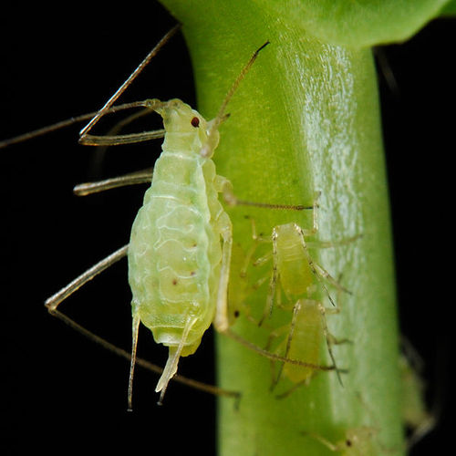<figcaption class="caption">'n Ma-plantluis met kleintjies, wat gevorm kan word deur ongeslagtelike- of geslagtelike voortplanting, afhangende van die toestande.<a href="http://en.wikipedia.org/wiki/File:Acyrthosiphon_pisum_%28pea_aphid%29-PLoS.jpg"> http://en.wikipedia.org/wiki/File:Acyrthosiphon_pisum_%28pea_aphid%29-PLoS.jpg </a></figcaption></figure><p/>
<div class="note col-md-6" data-type="didyouknow">
<p>Sommige spesies kan wissel tussen geslagtelike- en ongeslagtelike voortplanting, afhangende van sekere toestande, soos of daar 'n maat beskikbaar is vir geslagtelike voortplanting. Plantluise is een van hierdie soort organismes. Ons noem dit heterogamie.</p>
</div>
<p/>

<p>In hierdie hoofstuk gaan ons leer oor <strong>geslagtelike voortplanting</strong> waar twee organismes (die ouers) paar en sodoende hulle <strong>genetiese inligting (DNS)</strong> kombineer, om 'n nageslag te verkry wat 'n kombinasie van hulle eienskappe het, maar nie identies is nie. Geslagtelike voortplanting vind plaas by die meeste plante en diere. Ons gaan kyk na blomplante (angiosperma) as 'n voorbeeld van geslagtelike voortplanting by plante, en ook na voortplanting by die mens as 'n voorbeeld van voorplanting by diere.</p>
<div class="section"><h2 class="title" id="toc-id-1">Voortplanting by Angiosperma</h2><div class="teachers-guide">
<p>As 'n inleiding tot hierdie afdeling, moet leerders herinner word aan die diversiteit en klassifikasie van plante wat in Hoofstuk 2 bespreek is, asook hoe angiosperma inpas in die klassifikasiesisteem. KABV beveel aan dat leerders 'n boontjieplant laat groei as hierdie onderwerp bespreek word, sodat hulle die stadiums in die lewensiklus van angiosperma kan waarneem. Dit word aanbeveel dat leerders die sade tydens die eerste les plant.</p>
</div>
<p/>
<div class="note col-md-6" data-type="newwords"><ul data-class="ListBulleted"><li>angiosperm</li>
<li>ongeslagtelike voortplanting</li>
<li>sel</li>
<li>bevrugting</li>
<li>versmelt</li>
<li>genetiese inligting (DNS)</li>
<li>paar</li>
<li>stuifmeel</li>
<li>bestuiwing</li>
<li>bestuiwer(s)</li>
<li>geslagtelike voortplanting</li>
</ul></div>
<p/>

<p>Hoe maak plante nuwe plante? In hierdie hoofstuk gaan ons leer hoe <strong>angiosperm</strong> plante voortplant. Geslagtelike voortplanting by angiosperma lei tot die vorming van sade. Onder die regte toestande sal hierdie sade ontkiem en tot 'n nuwe plant ontwikkel.</p>

<p/>
<div class="activity" data-type="Activity"><h1 class="title">Kweek 'n boontjieplant</h1>
<p/>

<p><strong>MATERIALE</strong></p>
<ul data-class="ListBulleted"><li>boontjiesaad</li>
<li>papierhanddoek</li>
<li>glasbottel (of deurskynende plastiese houer / bakkie)</li>
<li>water</li>
<li>maatband of liniaal</li>
</ul><p/>

<p><strong>INSTRUKSIES:</strong></p>
<ol data-class="ListEnumerated"><li>Plaas 'n paar stukke papierhanddoek, toiletpapier of snesies in die deurskynende houer.</li>
<li>Maak die boontjiesaad toe in die papier, en sit dit binne-in die houer, sodat jy die veranderinge kan waarneem.</li>
<li>Voeg 'n bietjie water by sodat die papierhanddoek klam is.</li>
<li>Plaas in 'n area waar daar genoeg sonlig is.</li>
<li>Sprinkel dit elke dag met 'n bietjie water, sodat die papierhanddoek klam bly.</li>
<li>
<p>Begin reeds die eerste dag om die lengte van die boontjieplant daagliks te meet, en skryf die lengte in die volgende tabel neer.</p>

        <table><tr><td><p><strong>Dag</strong></p></td><td><p><strong>Hoogte van plant (cm)</strong></p></td><td><p><strong>Kommentaar/ notas</strong></p></td></tr><tr><td><p><strong>1</strong></p></td><td><p/></td><td><p/></td></tr><tr><td><p><strong>2</strong></p></td><td><p/></td><td><p/></td></tr><tr><td><p><strong>3</strong></p></td><td><p/></td><td><p/></td></tr><tr><td><p><strong>4</strong></p></td><td><p/></td><td><p/></td></tr><tr><td><p><strong>5</strong></p></td><td><p/></td><td><p/></td></tr><tr><td><p><strong>6</strong></p></td><td><p/></td><td><p/></td></tr><tr><td><p><strong>7</strong></p></td><td><p/></td><td><p/></td></tr><tr><td><p><strong>8</strong></p></td><td><p/></td><td><p/></td></tr><tr><td><p><strong>9</strong></p></td><td><p/></td><td><p/></td></tr><tr><td><p><strong>10</strong></p></td><td><p/></td><td><p/></td></tr><tr><td><p><strong>11</strong></p></td><td><p/></td><td><p/></td></tr><tr><td><p><strong>12</strong></p></td><td><p/></td><td><p/></td></tr><tr><td><p><strong>13</strong></p></td><td><p/></td><td><p/></td></tr><tr><td><p><strong>14</strong></p></td><td><p/></td><td><p/></td></tr></table></li>
<li>Maak elke dag notas van jou waarnemings. Byvoorbeeld, op watter dag het die boontjie se wortels begin groei? Waaruit het die stingel gegroei? Wanneer het jy die eerste blaar (of blare) waargeneem? Hoeveel was daar en hoe het dit gelyk?</li>
</ol><p><strong>VRAE:</strong></p>
<div class="exercises"><div class="problemset"><div class="entry"><div class="problem">
<p>Wat is die term wat ons gebruik wanneer 'n saad begin groei? </p><hr/></div><div class="solution">
<p/><p>Ontkieming</p>
</div></div><div class="entry"><div class="problem">
<p>Wat is die vereistes vir 'n saad om te groei? </p><hr/></div><div class="solution">
<p/><p>Klammigeid (vog), hitte en lig</p>
</div></div><div class="entry"><div class="problem">
<p>Gebruik die getalle in die tabel om 'n grafiek te trek van die plant se groei (lengte) oor die 14 dae van jou ondersoek. <br/><br/><br/><br/><br/><br/><br/><br/><br/><br/></p>
</div><div class="solution">
<p/><p>Leerder-afhanklike vraag</p>
</div></div></div></div>

<p/>
<div class="note col-md-6" data-type="visit">
<p>Hou 'n boontjieplant dop soos hy ontkiem en groei.<a data-class="ExternalLink" href="http://bit.ly/14GGtYn">bit.ly/14GGtYn</a></p>
</div>
<p/>
</div>

<p/>

<p>Kom ons leer hoe plante sade maak. Tydens geslagtelike voortplanting versmelt (kombineer) die helfte van die manlike, en die helfte van die vroulike genetiese materiaal (DNS), om 'n nuwe individu te skep, met die gesamentlike genetiese materiaal van albei die ouers. By die meeste diere identifiseer ons  gewoonlik maklik twee geslagte van diere, 'n manlike en 'n vroulike dier, wat elk manlike en vroulike kenmerke het. By angiosperma<em>,</em> is die blomme die plant se geslagsorgane. Die blomme maak manlike en vroulike strukture wat &#243;f op dieselfde plant, &#243;f op twee verskillende plante kan wees. Kom ons kyk 'n bietjie van naderby na die struktuur van blomme.</p>
<div class="section"><h3 class="title" id="toc-id-2">Blomstrukture</h3><div class="note col-md-6" data-type="newwords"><ul data-class="ListBulleted"><li>helmknop</li>
<li>embriosak</li>
<li>helmdraad</li>
<li>vrugbeginsel</li>
<li>saadknop</li>
<li>blomsteel</li>
<li>kroonblare</li>
<li>stamper (vrugblaar)</li>
<li>stuifmeel</li>
<li>blombodem</li>
<li>kelkblare</li>
<li>meeldraad</li>
<li>stempel</li>
<li>styl</li>
</ul></div>
<p/>

<p>Blomme is die geslagsorgane van die angiosperma. Baie plante het beide manlike en vroulike dele op dieselfde blom terwyl sommige plante die manlike en vroulike strukture op verskillende plante mag h&#234;.</p>

<p/>
<div class="note col-md-6" data-type="takenote">
<p>Plante kan oor die algemeen verdeel word in gimnosperma en angiosperma. Onthou dat Angiosperma blomme het, en hulle sade is binne-in 'n vrug, terwyl Gimnosperma se sade binne-in ke&#235;ls is.</p>
</div>
<p/>

<p>Hoewel blomme in baie verskillende vorms, groottes en kleure voorkom, soos in die foto's in die volgende aktiwiteit ge&#239;llustreer word, is daar sekere komponente wat in al die blomme voorkom. Hierdie komponente is:</p>
<ul data-class="ListBulleted"><li>blomsteel</li>
<li>blombodem</li>
<li>kroonblare</li>
<li>kelkblare</li>
<li>die manlike strukture</li>
<li>die vroulike strukture</li>
</ul><p/>

<p>Blomme is gewoonlik aan die punt van 'n steel, wat lank en stewig kan wees soos by 'n roos of agapantus, of kort en buigbaar, soos by 'n petunia. Die steeltjie van 'n blom word die <strong>blomsteel</strong> genoem.</p>

<p/>
<div class="note col-md-6" data-type="didyouknow">
<p>Sonneblomme is in werklikheid saamgestelde blomme, wat bestaan &#8203;&#8203;uit honderde klein individuele blommetjies wat saamwerk. Die "kroonblaarjies" is eintlik individuele blomme, wat lintblommetjies genoem word. Die middelste deel van die sonneblom is eintlik 'n klomp klein, styfgepakte blommetjies, wat die buisblommetjies genoem word. Elk van hierdie buisblommetjies het sy eie stamper en meeldrade.</p>
</div>
<p/>

<p>Die <strong>blombodem</strong> is die boonste gedeelte van die blomsteel, waar die verskillende dele van die blom bymekaarkom.</p>

<p/>

<p>Terwyl die blomknoppie gevorm word, omring en beskerm die klein, groen blaartjies die blomknoppie. Hierdie is die <strong>kelkblare</strong>. Die kelkblare is dikwels groen en lyk soos klein blaartjies, omdat hulle groen is en kan foto'sinteer. Soms is die kelkblare dieselfde kleur as die kroonblare, soos by waterlelies en tulpe.</p>

<p/>

<p>'n Blom se <strong>kroonblare</strong> is gewoonlik die helderkleurige deel van die blom. Hulle lok <strong>bestuiwers</strong>, soos insekte en vo&#235;ls, asook vlermuise en muise. Ons sal later weer na <strong>bestuiwing</strong> kyk. In sommige plante is die kroonblare baie klein en is soms selfs afwesig. Dit is omdat hierdie blomme op die wind staatmaak om die <strong>stuifmeel</strong> te versprei en het dus nie kroonblare nodig om diere te lok nie, soos by grasse.</p>

<p/>
<figure>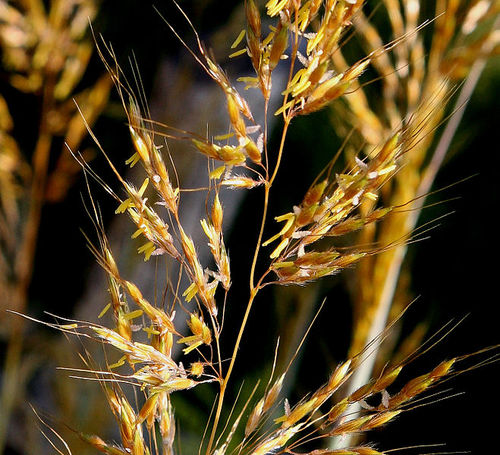<figcaption class="caption">Grasblommetjies</figcaption></figure><p/>
<div class="activity" data-type="Activity"><h1 class="title">Identifiseer die uitwendige strukture van blomme</h1>
<p/>
<figure><figcaption class="caption">Roos</figcaption></figure><figure><figcaption class="caption">Waterlelies</figcaption></figure><figure><figcaption class="caption">Petunias.</figcaption></figure><p/>

<p><strong>VRAE:</strong></p>
<div class="exercises"><div class="problemset"><div class="entry"><div class="problem">
<p>Wat noem ons di&#233; deel van die blomsteel waar die kelkblare en kroonblare aan die blomsteel vasheg? </p><hr/></div><div class="solution">
<p/><p>Blombodem</p>
</div></div><div class="entry"><div class="problem">
<p>Verduidelik waarom die kroonblare van sommige blomme so helder gekleurd is, terwyl ons by ander plante skaars die kroonblare kan sien, en hulle soms heeltemal afwesig is. </p><hr/><hr/></div><div class="solution">
<p/><p>Die helderkleurige kroonblare lok bestuiwers. Plante wat deur die wind bestuif word, het nie nodig om insekte of diere te lok om deur hulle te bestuif te word nie, en het dus nie helderkleurige kroonblare nodig nie. Deur nie kroonblare te maak nie, kan hulle eerder bel&#234; in die vervaardiging van meer stuifmeel.</p>
</div></div><div class="entry"><div class="problem">
<p>Bestudeer die foto's van verskillende blomme hierbo. Beskryf die uitwendige strukture van elkeen van hierdie blomme op grond van hul blomstele en blombodems, asook hul kelkblare en kroonblare.</p>

          
          <table><tr><td><p>Roos</p></td><td><p/></td></tr><tr><td><p>Lelie</p></td><td><p/></td></tr><tr><td><p>Petunias</p></td><td><p/></td></tr></table></div><div class="solution">
<p/><p/>

          <table><tr><td><p>Roos</p></td><td><p>Lang, reguit blomstele hou die blomme regop na die son toe; groen kelkblare om die blomknoppies te beskerm; kelkblare is helder om bestuiwers te lok.</p></td></tr><tr><td><p>Lelie</p></td><td><p>Lang reguit blomstele, wat onder die water is en minder stewig is as die sonneblom, sodat dit in die water heen en weer kan beweeg en dan is daar die binneste laag van wit kroonblare, en die buitenste laag wat eintlik wit kelkblare is, en nie kroonblare nie.</p></td></tr><tr><td><p>Petunias</p></td><td><p>Kort blomstele wat uit die plantjie vertak; klein, groen kelkblare, groot pienk kroonblare om bestuiwers te lok.</p></td></tr></table><p/>
</div></div></div></div>

<p/>
</div>

<p/>

<p>Die strukture van die blom wat ons hier bespreek word, is aan die buitekant. Die voortplantingstrukture van die blom is in die binnekant van die blom. Blomme kan &#243;f manlike &#243;f vroulike strukture, of albei bevat.</p>
<div class="section"><h4 class="title">Manlike voortplantingstrukture</h4><div class="teachers-guide">
<p>Leerders het nog nie van selle in Natuurwetenskappe geleer nie, maar dit is nuttig om 'n algemene begrip van selle te h&#234;, om te verstaan wat bedoel word wanneer na manlike en vroulike geslagselle verwys word. Hier is 'n kantlynnota oor selle ingesluit, en dit sal voordelig wees om u klas 'n bietjie van selle te vertel, alhoewel hulle dit eers formeel in Gr. 9 bestudeer in Lewe en  Lewenswyse.</p>
</div>
<p/>
<div class="note col-md-6" data-type="takenote">
<p><strong>Wat is selle?</strong> Selle is die kleinste boublokkies van organismes. Daar is baie verskillende soorte selle, bv. wangselle, spierselle en senuweeselle by sommige diere; of blaarselle, wortelselle en kroonblaarselle in plante.</p>
</div>
<p/>

<p>In hierdie afdeling, sal ons praat oor geslagselle. Dit is &#243;f manlike &#243;f vroulike geslagselle en dit dra slegs die helfte van die genetiese materiaal (DNS) van 'n tipiese sel. Wanneer hierdie geslagselle versmelt, maak die twee helftes van die manlike en die vroulike organisme 'n nuwe organisme met die gesamentlike genetiese materiaal (DNS) van beide.</p>

<p/>

<p>Die <strong>meeldraad</strong> is die manlike deel van die blom. Die meeldrade bestaan uit twee dele: die <strong>helmknoppe</strong> en die <strong>helmdrade</strong> waarop die helmknoppe gedra word.</p>

<p/>

<p>Helmknoppe produseer die stuifmeel wat die manlike geslagselle bevat. Die manlike selle in die stuifmeelkorrels word oorgedra na die vroulike geslagselle, en wanneer hulle saamsmelt, vorm  hulle 'n saad wat in 'n nuwe plant kan ontwikkel.</p>

<p/>

<p>Helmdrade is lang strukture waaraan die helmknoppe gedra word. In sommige blomme is die meeldrade lank terwyl dit in ander relatief kort is.</p>
<figure><figcaption class="caption">Die manlike dele is duidelik te sien op hierdie foto van 'n blom waar die helmknoppe bedek is met stuifmeel en aan die basis van die blom geheg is deur middel van helmdrade.<a href="http://commons.wikimedia.org/wiki/File:GIPE25_-_Etamines_d-une_fleur_d-Amaryllis_%28by%29.jpg"> http://commons.wikimedia.org/wiki/File:GIPE25_-_Etamines_d-une_fleur_d-Amaryllis_%28by%29.jpg </a></figcaption></figure></div><div class="section"><h4 class="title">Die vroulike voortplantingsorgane </h4>
<p/>

<p>Die <strong>stamper</strong> is die vroulike orgaan van die plant en is gewoonlik in die middel van die blom gele&#235;. Dit bestaan uit 'n stempel, styl en vrugbeginsel. Alle dele van die stamper vervul 'n spesifieke funksie tydens die ontvangs van stuifmeel, die vervoer daarvan en om bevrugting te bewerkstellig van die <strong>saadknoppe</strong> (wat die vroulike gamete bevat). Die vroulike gamete word ook ova (enkelvoud ovum) of eierselle genoem. Saadknoppe ontwikkel tot sade na <strong>bevrugting</strong>.</p>

<p/>
<div class="note col-md-6" data-type="takenote">
<p>Elke stamper bestaan uit 'n stempel, styl en vrugbeginsel. Sommige blomme het net een stamper. In daardie blomme is die stamper en die vrugblaar een en dieselfde ding. In ander blomme vorm 'n hele paar stampers die vrugblaar!</p>
</div>
<p/>

<p>Die <strong>stempel</strong> is 'n struktuur wat die stuifmeel tydens bestuiwing ontvang. Dit is aan die bopunt van 'n lang dun styl gele&#235;. Wanneer dit gereed is om stuifmeel te ontvang, word dit klewerig om 'n oppervlak te skep waaraan die stuifmeel kan vasklou.</p>

<p/>

<p>Die <strong>styl</strong> is 'n lang buis wat die stempel met die vrugbeginsel verbind, waarin die saadknop(pe) is. Die styl dra die stempel en hou dit in die bes moontlike posisie om stuifmeel te kan ontvang. Nadat  stuifmeel op die stempel geval het, groei die stuifmeel met lang buisies in die styl af om by die saadknoppie in die vrugbeginsel uit te kom.</p>

<p/>

<p>Die <strong>vrugbeginsel</strong> is die vergrote struktuur aan die basis van die stamper. Dit mag verdeel wees in verskillende dele (saadhokke) en produseer die saadknoppies wat die vroulike gamete bevat. Binne-in die saadknop is die <strong>embriosak</strong><em>.</em> Die embrio in die saadjie sal hier ontwikkel.</p>
<figure><figcaption class="caption">Die vroulike dele van die blom vorm die stamper.</figcaption></figure><p/>
<div class="activity" data-type="Activity"><h1 class="title">Blomdisseksie</h1>
<p/>

<p><strong>MATERIALE</strong></p>
<ul data-class="ListBulleted"><li>disseksie-naald</li>
<li>skalpel</li>
<li>petunia- of hibuskusblomme</li>
</ul><div class="teachers-guide">
<p>Petunia- of hibuskus-blomme werk die beste vir disseksies. U kan egter enige blomme uit  tuine in u omgewing gebruik. U kan die video wat oor disseksie van 'n hibuskus-blom handel, in die BESOEK-boksie gebruik voor u les, sodat u weet hoe om 'n disseksie te doen en hoe om u leerders te begelei.</p>
</div>
<p/>

<p><strong>INSTRUKSIES:</strong></p>
<ol data-class="ListEnumerated"><li>Bestudeer die volgende diagram van 'n blom. Gebruik jou kennis van die <strong>buitenste strukture</strong> van 'n blom. Dui die volgende dele aan: kroonblaar, kelkblaar, blombodem en blomsteel. Sodra ons hierdie disseksie gedoen het, gaan ons later terugkom om die binneste gedeeltes van die blom ook te bekyk en te benoem.</li>
</ol><div class="teachers-guide">
<p>Leerders moet seker maak dat hulle dele van 'n struktuur op die regte wyse benoem. Hulle moet met 'n liniaal reguit paralelle lyne trek wat aan die deel wat hulle benoem raak.</p>
</div><figure id="gd-idm2176880">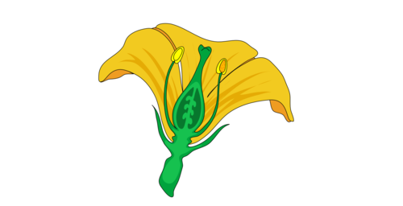</figure><div class="teachers-guide">
<p>'n Benoemde diagram moet soos volg lyk:</p>
<figure id="gd-idm5512304">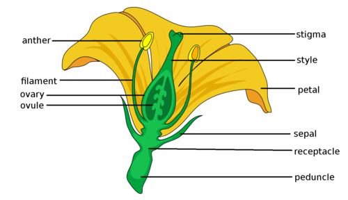</figure><p/>
</div><ol data-class="ListEnumerated"><li>Gaan kyk in julle tuin by die huis of in die skooltuin en kies 'n blom om op jou eie te dissekteer. As jou onderwyser petunias- of hibuskusblomme het, dissekteer dan een van hulle.<ol data-class="ListEnumerated"><li>Verwyder eerstens die buitenste kelkblare.</li>
<li>Verwyder dan die kroonblare. Jy sien nou die vrugbeginsel. </li>
<li>Identifiseer die manlike en vroulike dele. Benoem hulle op die diagram hierbo.</li>
<li>Gebruik jou skalpel om die vrugbeginsel te halveer.</li>
<li>Gebruik die disseksienaald om die vrugbeginsel versigtig oop te maak. Kyk of jy die saadknoppe kan sien.</li>
<li>Benoem die vrugbeginsel en die saadknoppe in die diagram hierbo.</li>
</ol></li>
</ol><div class="note col-md-6" data-type="visit">
<p>Kyk na die disseksie van 'n blom.<a data-class="ExternalLink" href="http://bit.ly/15yql7o">bit.ly/15yql7o</a></p>
</div>
<p/>
</div>

<p/>

<p>Noudat ons meer geleer het van die strukture waaruit blomme bestaan, gaan ons kyk hoe hulle bestuif word.</p></div></div><div class="section"><h3 class="title" id="toc-id-3">Bestuiwing</h3><div class="teachers-guide">
<p>Neem kennis dat leerders die proses van bestuiwing en saadverspreiding kan verwar. Bestuiwing is die proses waardeur die manlike stuifmeel na die vroulike stempel oorgedra word om bevrugting te bewerkstellig. Saadverspreiding vind plaas <em>na</em> bevrugting en behels die verspreiding van die nuwe saad (nageslag) na 'n ander plek sodat dit nie met die ouerplant sal kompeteer nie.</p>
</div>
<p/>

<p>Vir 'n blomdraende plant om geslagtelik voort te plant, moet die manlike geslagselle in die stuifmeelkorrels versmelt met die ova (eierselle) in die saadknoppe in die vrugbeginsel. Die stuifmeelkorrels is gewoonlik baie klein - omtrent die grootte van 'n stofkorreltjie.</p>

<p/>
<figure><figcaption class="caption">Die persoon se hand is oortrek met klein stuifmeelkorreltjies.<a href="http://www.flickr.com/photos/alastairvance/4498154629/"> http://www.flickr.com/photos/alastairvance/4498154629/ </a></figcaption></figure><figure>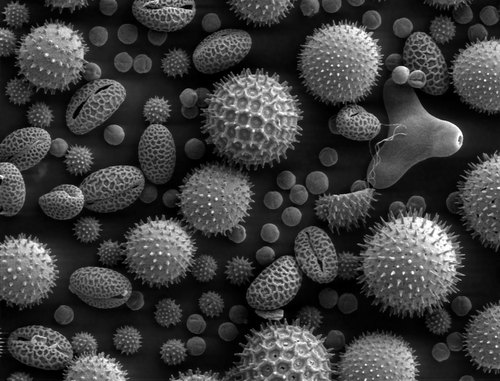<figcaption class="caption">'n Foto van 'n verskeidenheid stuifmeelkorrels van verskillende plante wat geneem is met 'n mikroskoop met 'n baie ho&#235; vergroting. <a href="http://upload.wikimedia.org/wikipedia/commons/a/a4/Misc_pollen.jpg"> http://upload.wikimedia.org/wikipedia/commons/a/a4/Misc_pollen.jpg </a></figcaption></figure><div class="teachers-guide">
<p>Hierdie beeld van stuifmeel is geneem deur 'n skandeer-elektronmikroskoop. U kan hierdie feit aan die leerders noem maar onthou dat hulle sal eers formeel in Gr. 9, in Lewe en Lewenswyse, die verskillende soorte mikroskope behandel.</p>
</div>
<p/>
<div class="note col-md-6" data-type="visit">
<p>Kyk na die volgende fassinerende videos wat oor bestuiwing handel <a data-class="ExternalLink" href="http://bit.ly/18dpxZf">bit.ly/18dpxZf</a> or <a data-class="ExternalLink" href="http://bit.ly/148pQjS">bit.ly/148pQjS</a></p>
</div>
<p/>

<p>Stuifmeel, vanaf die meeldrade, moet oorgedra word na die stempel van dieselfde blom of ander blomme van dieselfde plant of ander blomme van dieselfde spesie. Hierdie proses word <strong>bestuiwing</strong> genoem. Indien bestuiwing nie plaasvind nie, sal daar geen bevrugting wees nie en die plant sal dan nie enige sade of vrugte kan produseer nie.</p>

<p/>

<p>Oor die algemeen produseer plante 'n groot hoeveelheid stuifmeel om die kanse te vergroot om dit na soveel moontlik stempels, van soveel moontlik blomme (van dieselfde spesie) oor te dra.</p>

<p/>
<figure>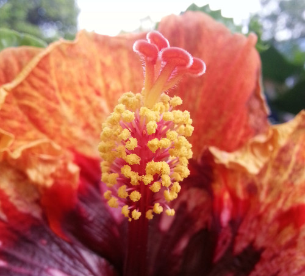<figcaption class="caption">Kan jy die helmknoppe en die stempels, wat oortrek is met stuifmeel, by die hibuskusblom identifiseer?</figcaption></figure><div class="teachers-guide">
<p>Daar is verskeie helmknoppe wat oortrek is met geel stuifmeel. Die vier "steeltjies"  met geronde bokante, wat bo uitsteek, is die style met stempels.</p>
</div>
<p/>

<p>Bestuiwing behels die oordraag van stuifmeel vanaf die helmknoppe na die stempels van dieselfde of ander blomme van dieselfde spesie. Bestuiwing van blomme kan op verskillende maniere plaasvind. Blomme kan byvoorbeeld deur wind, water en diere bestuif word. Angiosperma se blomme het spesiale aanpassings wat met spesifieke tipes bestuiwing help. Kom ons kyk na sommige van hierdie metodes van bestuiwing en hoe blomme aangepas is om bestuiwing te bevorder.</p>

<p/>
<div class="note col-md-6" data-type="takenote">
<p>'n Aanpassing verwys na die manier van gedrag of die wyse waarop 'n spesifieke struktuur van die plant oor baie jare verander het (deur evolusie), sodat dit die funksie daarvan so goed as moontlik kan uitvoer.</p>
</div><div class="section"><h4 class="title">Bestuiwing deur diere</h4>
<p>Diere wat blomme bestuif word bestuiwers genoem. Hierdie diere kom na blomme toe om op die nektar wat die blomme produseer, te voed. Soos wat hulle voed, klou die stuifmeel aan hulle lywe vas. Wanneer hulle na die volgende blom aanbeweeg, vryf sommige van die stuifmeelkorrels aan die nuwe blom se dele af. Ons noem hierdie proses bestuiwing.</p>
<figure>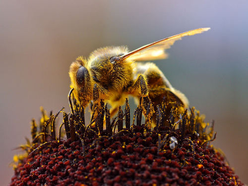<figcaption class="caption">Kan jy sien hoe hierdie by met stuimeel oortrek is, terwyl dit op die nektar voed?<a href="http://commons.wikimedia.org/wiki/File:Bees_Collecting_Pollen_2004-08-14.jpg"> http://commons.wikimedia.org/wiki/File:Bees_Collecting_Pollen_2004-08-14.jpg </a></figcaption></figure><p/>

<p>Aangesien bestuiwers op spesifieke plante voed, beweeg hulle gewoonlik van plant tot plant van dieselfde plantspesie. Dit lei tot doeltreffende bestuiwing.</p>

<p/>
<div class="activity" data-type="Activity"><h1 class="title">Identifiseer die bestuiwers</h1>
<p/>

<p><strong>INSTRUKSIES:</strong></p>
<div class="exercises"><div class="problemset"><div class="entry"><div class="problem">
<p>Daar is baie verskillende bestuiwers. Sommige word hieronder getoon. Identifiseer elke bestuiwer in elke foto in die tabel en skryf die naam daarvan in die re&#235;l hieronder.</p>

	    <table class="too-large no-header"><tr><td><figure id="gd-idp1258464"></figure><p><a data-class="ExternalLink" href="http://www.flickr.com/photos/fsnorthernregion/6330342852/">http://www.flickr.com/photos/fsnorthernregion/6330342852/</a></p></td><td><figure id="gd-idp1227104"></figure><p><a data-class="ExternalLink" href="http://www.flickr.com/photos/dkeats/5845889189/">http://www.flickr.com/photos/dkeats/5845889189/</a></p>

                      
<p/></td></tr><tr><td><p/></td><td><p/></td></tr><tr><td><figure id="gd-idm6621168">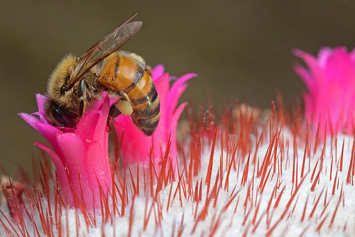</figure><p><a data-class="ExternalLink" href="http://www.flickr.com/photos/dejeuxx/6924771739/">http://www.flickr.com/photos/dejeuxx/6924771739/</a></p></td><td><figure id="gd-idm6460576">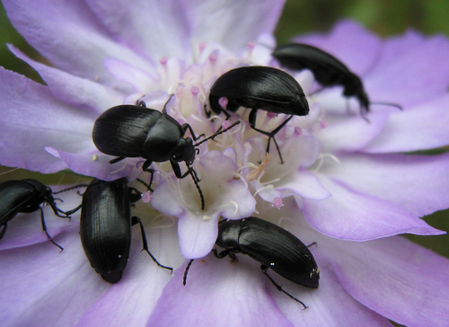</figure><p><a data-class="ExternalLink" href="http://www.flickr.com/photos/col_and_tasha/4716336027/">http://www.flickr.com/photos/col_and_tasha/4716336027/</a></p></td></tr><tr><td><p/></td><td><p/></td></tr><tr><td><p/>

                      <figure id="gd-idp156768"></figure><p><a data-class="ExternalLink" href="http://www.flickr.com/photos/usdagov/7420019398/">http://www.flickr.com/photos/usdagov/7420019398/</a></p></td><td><figure id="gd-idm4531856"></figure><p><a data-class="ExternalLink" href="http://www.flickr.com/photos/shekgraham/127431519/">http://www.flickr.com/photos/shekgraham/127431519/</a></p>

                      
<p/></td></tr><tr><td><p/></td><td><p/></td></tr></table></div><div class="solution">
<p/><p/>

            <table><tr><td><figure id="gd-idp7673376"></figure><p><a data-class="ExternalLink" href="http://www.flickr.com/photos/fsnorthernregion/6330342852/">http://www.flickr.com/photos/fsnorthernregion/6330342852/</a></p></td><td><figure id="gd-idm4302384"></figure><p><a data-class="ExternalLink" href="http://www.flickr.com/photos/dkeats/5845889189/">http://www.flickr.com/photos/dkeats/5845889189/</a></p>

                      
<p/></td></tr><tr><td><p>Mot</p></td><td><p>Suikerbekkie</p></td></tr><tr><td><figure id="gd-idp13611024"></figure><p><a data-class="ExternalLink" href="http://www.flickr.com/photos/dejeuxx/6924771739/">http://www.flickr.com/photos/dejeuxx/6924771739/</a></p></td><td><figure id="gd-idm1699904"></figure><p><a data-class="ExternalLink" href="http://www.flickr.com/photos/col_and_tasha/4716336027/">http://www.flickr.com/photos/col_and_tasha/4716336027/</a></p></td></tr><tr><td><p>Heuningby</p></td><td><p>Kewers</p></td></tr><tr><td><p/>

                      <figure id="gd-idm5885392">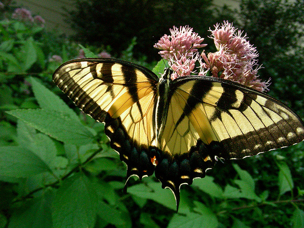</figure><p><a data-class="ExternalLink" href="http://www.flickr.com/photos/usdagov/7420019398/">http://www.flickr.com/photos/usdagov/7420019398/</a></p></td><td><figure id="gd-idm3252064"></figure><p><a data-class="ExternalLink" href="http://www.flickr.com/photos/shekgraham/127431519/">http://www.flickr.com/photos/shekgraham/127431519/</a></p>

                      
<p/></td></tr><tr><td><p>Skoenlapper</p></td><td><p>Vlermuis wat op nektar voed</p></td></tr></table><p/>
</div></div></div></div>

<p/>

<p><strong>VRAE:</strong></p>
<div class="exercises"><div class="problemset"><div class="entry"><div class="problem">
<p>Wat let jy op omtrent hierdie bestuiwers? (Watter tipe dier is die mees algemene?)</p><hr/></div><div class="solution">
<p/><p>Hulle is meestal insekte</p>
</div></div><div class="entry"><div class="problem">
<p>Wat dink jy kry al hierdie bestuiwers by die blomme wat hulle besoek? </p><hr/></div><div class="solution">
<p/><p>Hierdie bestuiwers voed meestal op nektar en in sommige gevalle ook op stuifmeel.</p>
</div></div><div class="entry"><div class="problem">
<p>Wat dink jy lok insekte na blomme toe? Met ander woorde, hoe dink jy is blomme aangepas om bestuiwers na hulle toe te lok? </p><hr/><hr/><hr/></div><div class="solution">
<p/><p>Blomme het groot kleurvolle kroonblare om bestuiwers te lok.</p>

            
<p>Blomme het soet nektar om bestuiwers mee te lok.</p>

            
<p>Blomme het 'n soet reuk om bestuiwers mee te lok.</p>

	    
<p><strong>Let op:</strong>'n Wanvoorstelling wat leerders dikwels het is dat blomme stuifmeel maak vir insekte. Insekte, soos bye, maak wel ook stuifmeel bymekaar vir die maak van byewas vir die byekorf, maar dit is nie die rede waarom blomme stuifmeel maak nie. Blomme maak ook nie nektar vir die bye nie. Beklemtoon dat nektar wel as beloning vir die bestuiwer gemaak word.</p>
</div></div><div class="entry"><div class="problem">
<p>Blomme is ook aangepas sodat die bestuiwers hulle kan besoek en sodat hulle seker kan maak dat stuifmeel op die bestuiwers kan afvryf om na 'n ander blom oorgedra te word. Kyk na die volgende foto van 'n vo&#235;l wat besig is om nektar uit die blom te drink. Hoe dink jy is die blom aangepas om seker te maak dat dit deur die vo&#235;l bestuif sal word?</p>

              <figure><figcaption class="caption">'n Vo&#235;l wat besig is om nektar uit 'n blom te drink.<a href="http://www.flickr.com/photos/sidm/6570554993/"> http://www.flickr.com/photos/sidm/6570554993/ </a></figcaption></figure><p/><hr/><hr/><hr/></div><div class="solution">
<p/><p>Die blom is lank en dun sodat die vo&#235;l sy bek tot onder in die blom moet insteek om die nektar by te kom. Sy kop sal dan teen die helmknoppe, wat die stuifmeel bevat, skuur. Die helmdrade en die style is lank en die helmknoppe en stempels steek aan die bokant van die blom uit sodat die vo&#235;l sy kop daarteen skuur as hy van die nektar drink. Van die stuifmeel sit aan sy kop vas en van die stuifmeel van vorige blomme wat hy besoek het, vryf aan die blom waarby hy nou is, af. Die blomsteel moet sterk genoeg wees om die vo&#235;l te kan ondersteun.</p>
</div></div><div class="entry"><div class="problem">
<p>Die volgende blom word 'n Voodoo-lelie genoem. In teenstelling met al die blomme wat ons reeds genoem het, wat 'n soet reuk afgee, gee hierdie lelie 'n baie slegte reuk af. Dit ruik na verrottende vleis of beesmis. Die kleur van die kroonblare is ook donker, soos die kleur van vleis. Dit wys dat verskillende blomme aangepas het by verskillende bestuiwers. Watter tipes bestuiwers, dink jy, sal hierdie blomme bestuif? Wenk: Dink aan insekte wat normaalweg in die omgewing van verrottende voedsel aangetref word.</p>
<figure>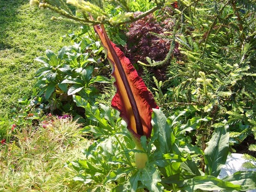<figcaption class="caption">'n Voodoo-lelie.</figcaption></figure><p/><hr/></div><div class="solution">
<p/><p>Vlie&#235; word na verrottende voedsel toe aangetrek. Hulle sal dus die mees waarskynlike bestuiwers van hierdie soort blom wees.</p>
</div></div><div class="entry"><div class="problem">
<p><strong>Werk in pare om die volgende vier vrae te beantwoord.</strong> Gaan loop in die skooltuin rond en identifiseer blomme wat julle dink waarskynlik deur bestuiwers bestuif word. Maak 'n tekening van ten minste drie sulke blomme. <br/><br/><br/><br/><br/><br/><br/><br/></p>
</div><div class="solution">
<p/><p>Leerder-afhanklike antwoord</p>
</div></div><div class="entry"><div class="problem">
<p>Identifiseer die algemene name van hierdie plante en probeer om hulle wetenskaplik name uit te vind. </p><hr/><hr/><hr/></div><div class="solution">
<p/><p>Leerder-afhanklike antwoord. <strong>Let op:</strong> Indien moontlik, nooi die skool se tuinpersoneel om te help om die leerders te help om die name van die plante te identifiseer. Laat die leerders toe om 'n internet-soektog te doen om uit te vind wat die wetenskaplike name van die plante is. Tuinboeke wat in die klas uitgestal word, kan ook help.</p>
</div></div><div class="entry"><div class="problem">
<p>Verduidelik hoe elkeen van hierdie plante se blomme aangepas is by die bestuiwing van elke soort bestuiwer.</p><hr/><hr/><hr/><hr/><hr/><hr/></div><div class="solution">
<p/><p>Leerder-afhanklike antwoord. Leerders mag na helder kroonblare, sterk geur, lang lengte van die meeldrade, stempels of nektarbuise verwys.</p>
</div></div><div class="entry"><div class="problem">
<p>Hoe kan jy maklik plante identifiseer wat deur bestuiwers bestuif word?</p><hr/><hr/></div><div class="solution">
<p/><p>Leerder-afhanklike antwoord. Antwoorde moet 'n verduideliking insluit dat hierdie plante helderkleurige kroonblare het om sommige insekte te lok, 'n sterk geur of miskien 'n lang nektar-produserende buis.</p>
</div></div></div></div>

<p/>
</div>

<p/>
<div class="note col-md-6" data-type="didyouknow">
<p>Sommige diere kan net sommige kleure sien. Skoenlappers, vo&#235;ls (en mense) kan rooi sien, bye sien nie rooi nie maar wel ultravioletstrale(UV). Sommige blomme pas  veral hulle blomme se kleur aan om verskillende insekte te lok.</p>
</div>
<p/>
<div class="note col-md-6" data-type="didyouknow">
<p>Daar is 'n direkte verwantskap tussen lengte van die tong of snawel van die hoofbestuiwer en die lengte van die nektarbuis van die blom! Hierdie is 'n baie goeie voorbeeld van natuurlike seleksie in werking. Jy sal meer hieroor leer in die laaste hoofstuk van hierdie kwartaal se werk.</p>
</div></div><div class="section"><h4 class="title">Bestuiwing deur wind en water</h4>
<p>Baie soorte blomme word deur diere bestuif, soos ons in die vorige afdeling bespreek het. Wind en water kan ook met bestuiwing help. Dink jy plante wat deur wind en water bestuif word, het kleurvolle blomme wat heerlik ruik en nektar vervaardig, nodig? Hoekom dink jy so?</p>

<p/>
<div class="teachers-guide">
<p>Voordat die volgende afdeling behandel word, moet u die leerders laat besin oor hoe blomme wat deur wind en water bestuif word, sal lyk. Watter aanpassings het hulle nodig om hulle anders te maak as blomme wat bestuiwers aantrek? So, byvoorbeeld, het hierdie blomme nie kleurvolle kroonblare met 'n heerlike reuk nodig, wat diere aantrek nie. Windbestuifde plante benodig groot hoeveelhede stuifmeel wat lig is om maklik deur die wind gedra te kan word.</p>
</div>
<p/>

<p>Hierdie is sommige van die uitdagings wat plante wat op wind- en waterbestuiwing staat maak, in die gesig staar. Hierdie plante het aangepas om die uitdagings die hoof te bied sodat hulle deur wind en water bestuif kan word.</p>

<p/>
<div class="activity" data-type="Activity"><h1 class="title">Bestudeer die blomme wat deur wind en water bestuif kan word</h1><div class="teachers-guide">
<p>Kyk na die foto's hiernaas. Versamel ook, indien moontlik, die blomme van grasse en bring dit klas toe. So nie, kan jy gou op die skoolterrein gaan kyk of jy enige grasse of riete kan sien groei. Leerders kan dit ook in pare doen. Hulle kan dan hulle antwoorde met mekaar bespreek waarna dit neergeskryf kan word.</p>

<p/>

<p>Gaan hierna die vrae met die klas deur. Hierdie aktiwiteite maak daarop staat dat onderwysers en leerders waarnemings maak deur na ware plante en blomme te kyk. Leerders moet die kennis aangaande plante met blomme wat deur diere bestuif word, wat hulle alreeds opgedoen het, hier gebruik. Dit sal hulle in staat stel om gevolgtrekkings/afleidings ten opsigte van windbestuifde plante,te maak.</p>
</div>
<p/>

<p><strong>INSTRUKSIES:</strong></p>
<ol data-class="ListEnumerated"><li>Bestudeer die volgende foto's van verskillende soorte grasse wat deur wind bestuif word.</li>
<li>Beantwoord dan die vrae wat volg.</li>
</ol><p/>
<figure>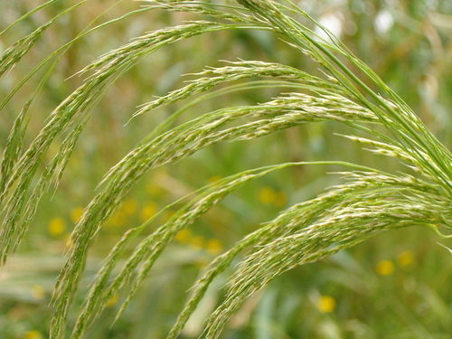<figcaption class="caption">In hierdie grasplant kan jy klein geel blommetjies aan 'n groen stingel sien.</figcaption></figure><figure><figcaption class="caption">Hierdie wit, veeragtige dele is die blomme van die gras.</figcaption></figure><figure><figcaption class="caption">Kan jy die klein, bruin blommetjies aan die mielieplant sien? Dit is die manlike blomme van mielies.<a href="http://www.flickr.com/photos/mrsdkrebs/5947866884/"> http://www.flickr.com/photos/mrsdkrebs/5947866884/ </a></figcaption></figure><figure>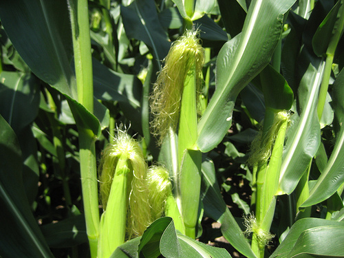<figcaption class="caption">Die foto toon die sy-agtige vroulike blom van die mielieplant.<a href="http://www.flickr.com/photos/mrsdkrebs/5947867990/"> http://www.flickr.com/photos/mrsdkrebs/5947867990/ </a></figcaption></figure><div class="teachers-guide">
<p>Kyk na die manlike en vroulike blomme van die mielieplant. Bespreek kruisbestuiwing met u leerders. Dit beteken dat stuifmeel van een plant na die vroulike blomme van 'n ander plant oorgedra word.</p>
</div>
<p/>

<p><strong>VRAE:</strong></p>
<div class="exercises"><div class="problemset"><div class="entry"><div class="problem">
<p>Beskryf die blomme in die foto. Jou beskrywing moet toon dat jy opgelet het na die kleur van die blomme, die grootte, die vorm en hoeveel daar aan elke plant voorkom. </p><hr/><hr/><hr/></div><div class="solution">
<p/><p>Die blomme is nie so kleurvol soos die blomme wat deur diere bestuif word nie. Hulle is vaal van kleur (wit, bruin en groen). Die blomme is relatief klein maar daar kom baie van hulle voor op een plant. Die blomme is meestal lank, slank en redelik delikaat (losserig). Daar is 'n groot aantal meeldrade wat by die blom uithang sodat stuifmeel maklik deur die wind weggevoer kan word.</p>
</div></div><div class="entry"><div class="problem">
<p>Waarom dink jy is die blomme nie kleurvol soos die blomme in die vorige aktiwiteit nie?</p><hr/><hr/></div><div class="solution">
<p/><p>Hierdie blomme het nie kleurvolle kroonblare nodig om aantreklik vir diere te wees nie. Hulle maak op windbestuiwing staat.</p>
</div></div><div class="entry"><div class="problem">
<p>Dink jy dat hierdie windbestuifde blomme nektar produseer? Waarom dink jy so? </p><hr/><hr/></div><div class="solution">
<p/><p>Oor die algemeen produseer hierdie blomme nie nektar nie aangesien hulle nie nodig het om aantreklik te wees vir diere nie. Hulle word nie deur diere bestuif nie.</p>
</div></div><div class="entry"><div class="problem">
<p>Watter tipe plante word oor die algemeen deur wind bestuif? </p><hr/></div><div class="solution">
<p/><p>Meeste grasse, riete en ook sommige bome.</p>
</div></div><div class="entry"><div class="problem">
      
<p>Die blomme in die foto's produseer oor die algemeen 'n groot hoeveelheid stuifmeel. Hulle produseer baie meer stuifmeel as blomme wat deur diere bestuif word. Waarom dink jy is dit so? Wenk: die kanse dat 'n blom deur 'n dier wat nektar kom drink bestuif sal word is baie groter as die kans om bestuif te word deur stuifmeel wat deur die wind gedra word. </p><hr/><hr/></div><div class="solution">
<p/><p>Leerders mag die vraag moeilik vind. U moet dit dus in die klas bespreek.</p>


<p>Hierdie blomme produseer groot hoeveelhede stuifmeel aangesien hulle nie kan voorsien waar die wind die stuifmeel heen sal neem nie. By blomme wat deur diere bestuif word, dra die diere direk die stuifmeel oor van blom na blom. Hulle hoef dus net kleiner hoeveelhede stuifmeel te produseer. By blomme wat deur die wind bestuif word, moet hulle staat maak op slegs 'n kans dat die wind sal waai en die stuifmeel in die regte rigting waai. Hoe meer stuifmeel, hoe groter dus die kans dat bestuiwing sal plaasvind.</p>

    
<p/>


<p><strong>Let op:</strong> U kan ook nou aan leerders noem dat plante wat van windbestuiwing gebruik maak gewoonlik in groot bevolkings groei. Groot getalle plante verhoog die kans dat plante wel bestuif sal word (dink aan grasse in grasvelde of aan riete en woude waarin daar groot getalle van een soort voorkom).</p>

      </div></div><div class="entry"><div class="problem">
<p>In blomme wat deur diere bestuif word, is die stuifmeel gewoonlik klewerig en koek in groepies saam. Dit is so omdat dit aan die dier wat die blom besoek moet vasklou. Dit kan dan na die volgende blom gedra word. By windbestuifde blomme verskil die stuifmeel. Die stuifmeel is glad en nie-klewerig. Dit is ook lig en klein. Waarom dink jy is dit so?</p><hr/><hr/><hr/></div><div class="solution">
<p/><p>By windbestuifde blomme word die stuifmeel deur die wind gedra soos wat die wind waai. By windbestuifde plante moet die stuifmeel deur die wind gedra kan word. Die stuifmeel kan daarom nie klewerig wees nie aangesien dit nie van die blom afgewaai sal word nie. Dit moet ook nie saamkoek of aan iets klou nie aangesien dit dan nie deur die wind gedra sal kan word nie. Hoe kleiner en ligter die stuifmeelkorrels, hoe verder sal dit deur die wind gedra kan word.</p>
</div></div><div class="entry"><div class="problem">
<p>Die struktuur van die manlike en vroulike dele van windbestuifde blomme is ook verskillend. Byvoorbeeld, met windbestuifde plante het die
meeldrade (manlike strukture) dikwels baie langer helmdrade en die helmknoppe hang afwaarts en kan maklik rondbeweeg. Die stempel
(vroulike strukture) is dikwels groot en lyk soos vere, soos jy in die foto's in hierdie aktiwiteit kan sien. Hoe dink jy sal hierdie aanpassings van die meeldrade en stempel die blomme help om deur die wind bestuif te word? </p><hr/><hr/><hr/><hr/></div><div class="solution">
<p/><p>Die lang helmdrade van die meeldrade laat die helmknoppe toe om aan die wind blootgestel te word sodat die stuifmeel maklik vrygelaat kan word. Die stampers is groot en veer-agtig sodat dit stuifmeel kan "vang"  soos wat dit in die lug verby beweeg. Hulle is lig sodat hulle in die wind rondgewaai kan word.</p>
</div></div><div class="entry"><div class="problem">
<p>Voltooi die volgende tabel om die struktuur van windbestuifde plante en plante wat deur bestuiwers (diere) bestuif word, te vergelyk.</p>

            <table><tr><td><p><strong>Struktuur</strong></p></td><td><p><strong>Windbestuifde plante</strong></p></td><td><p><strong>Plante deur bestuiwers bestuif.</strong></p></td></tr><tr><td><p>Kroonblare</p></td><td><p/>

                      
<p/></td><td><p/></td></tr><tr><td><p>Reuk</p></td><td><p/>

                      
<p/></td><td><p/></td></tr><tr><td><p>Nektar</p></td><td><p/>

                      
<p/></td><td><p/></td></tr><tr><td><p>Hoeveelheid stuifmeel</p></td><td><p/>

                      
<p/></td><td><p/></td></tr><tr><td><p>Struktuur van stuifmeel</p></td><td><p/>

                      
<p/></td><td><p/></td></tr><tr><td><p>Meeldrade</p></td><td><p/>

                      
<p/></td><td><p/></td></tr><tr><td><p>Stempel</p></td><td><p/>

                      
<p/></td><td><p/></td></tr></table></div><div class="solution">
<p/><p/>

            <table><tr><td><p><strong>Struktuur</strong></p></td><td><p><strong>Windbestuifde plante</strong></p></td><td><p><strong>Plante deur bestuiwers bestuif.</strong></p></td></tr><tr><td><p>Kroonblare</p></td><td><p>Baie klein of afwesige kroonblare wat bruin of vaalgroen is - hoef nie insekte te lok nie.</p></td><td><p>Groot, helderkleurige kroonblare om insekte te lok.</p></td></tr><tr><td><p>Reuk</p></td><td><p>Geen reuk - nie nodig om insekte te lok nie.</p></td><td><p>Meestal 'n spesifieke reuk om 'n spesifieke bestuiwer te lok.</p></td></tr><tr><td><p>Nektar</p></td><td><p>Geen nektar - het nie nodig om insekte te lok nie.</p></td><td><p>Baie produseer nektar om insekte te lok.</p></td></tr><tr><td><p>Hoeveelheid stuifmeel</p></td><td><p>Groot hoeveelhede stuifmeel geproduseer wat 'n groot vermorsing te weeg bring.</p></td><td><p>Klein hoeveelheid stuifmeel geproduseer wat nie so 'n vermorsing is soos by windbestuifde plante nie.</p></td></tr><tr><td><p>Struktuur van stuifmeel</p></td><td><p>Stuifmeel lig en glad om deur die wind weggevoer te kan word. Koek nie saam nie.</p></td><td><p>Stuifmeel gewoonlik klewerig of met hakies om aan die bestuiwers te kleef.</p></td></tr><tr><td><p>Meeldrade</p></td><td><p>Helmdrade en helmknoppe losweg aangeheg en waai (meesal) in die wind rond om stuifmeel maklik te kan vrystel.</p></td><td><p>Meeldrade stewig in die blom verpak om teen die bestuiwers te skuur.</p></td></tr><tr><td><p>Stempel</p></td><td><p>Stempels is groot en veer-agtig om die lug te filtreer ten einde stuifmeel op te vang.</p></td><td><p>Stempels is binne-in die blom waar die bestuiwer daarteen moet skuur. Die stempel het 'n klewerig oppervlak sodat die stuifmeel daaraan kan vasklou.</p></td></tr></table><p/>
</div></div></div></div>

<p/>
</div>

<p/>

<p>Plante wat met die hulp van water bestuif word, groei gewoonlik in water. Ons noem hulle akwatiese plante. Wanneer die stuifmeel vrygestel word, dryf dit op die oppervlak van die water. Die stempels van die ontvangende plant is gewoonlik naby die oppervlak van die water. Dit is sodat hulle bestuif kan word wanneer die stuifmeel teen hulle spoel.</p></div><div class="section"><h4 class="title">Bestuiwers en ons</h4>
<p>Bestuiwers speel 'n baie belangrike rol in die lewensiklus van plante. Die blomdraende plante sluit gewasse soos mielies en sonneblomme in, wat boere vir ons verbou vir voedsel. Aangesien angiosperma 'n groot komponent van die w&#234;reld se voedselbronne produseer, sal ons dan sonder die meeste van die voedselsoorte moet klaarkom.</p>

<p/>
<div class="note col-md-6" data-type="visit">
<p>Kyk na die video wat handel oor die misterieuse verdwyning van bye<a data-class="ExternalLink" href="http://bit.ly/195ITRh">bit.ly/195ITRh</a></p>
</div>
<p/>
<div class="activity" data-type="Activity"><h1 class="title">Artikel in die "The Earth Times"</h1>
<p/>

<p><strong>INSTRUKSIES:</strong></p>
<ol data-class="ListEnumerated"><li>Stel jou die toekoms voor - dit is die jaar 2056!</li>
<li>Lees die volgende artikel uit 'n koerant met die naam  "The Earth Times".</li>
<li>Beantwoord al die vrae wat volg.</li>
</ol><p/>
<table class="white"><tr><td><p><em>
                          <strong>Die verlies van bestuiwers lei tot verlies van gewasse - derde jaar van hongersnood</strong>
                        </em></p>

                      
<p/>

                      
<p><em>
                          <strong>23 Mei 2056</strong>
                        </em></p>

                      
<p/>

                      
<p>Die verlies van bestuiwers in Suidelike Afrika, veral wilde bye en skoenlappers, het gelei tot die derde jaar van misoeste. Baie min lewensvatbare saad is beskikbaar om volgende jaar te plant. Die volgende jaar se gewasse wat aangeplant gaan word mag dalk die laaste wees tensy 'n ander wyse van bestuiwing gevind kan word.</p>

                      
<p/>

                      
<p>Die hele gebied is getref deur die skielike dood van groot swerms bye en skoenlappers gedurende die afgelope 5 jaar. Bye en skoenlappers, wat eers baie algemeen voorgekom het, het nou byna uitgesterf.</p>

                      
<p/>

                      
<p>Een groep navorsers probeer steeds om die laaste kolonie bye van uitwissing te red. Die kolonie is weggesteek gevind in die berge van die Helderberg Natuurreservaat. Hulle berig dat die kolonie goed op dreef is en dat daar hierdie week 127 nuwe werkerbye bygevoeg is. Daar word gehoop dat meer kolonies gevind sal word in ander afgele&#235; bergagtige gebiede.</p>

                      
<p/>

                      
<p>Die navorsers probeer steeds om die oorsaak van die uitsterwing van die insekte te vind. Hulle is van mening dat die reuse toename in besoedeling en suurre&#235;n die vlerke en vliegvermo&#235; van die insekte be&#239;nvloed het.</p>

                      
<p/>

                      
<p>Die hoofnavorser, Dr Wimple, het aangedui dat hulle wildebylarwes van ander dele van die w&#234;reld, wat vir 'n paar jaar lank gevries was, bekom het. Die span is nou byna gereed om die bylarwes in die kolonie vry te laat. Hulle hoop dat dit die diversiteit van die populasie sal verhoog. Dr Wimple se span werk nou saam met ander soortgelyke spanne in die w&#234;reld om 'n oplossing vir die probleem te vind.</p>

                      
<p/>

                      
<p>Die span is ook besig om te kyk na die genetiese modifikasie van gewasse soos byvoorbeeld mielies, om die effektiwiteit van windbestuiwing te verhoog. Hulle hoop dat dit die produksie van gewasse soos mielies sal verhoog. Die wetenskaplikes sal dit doen deur die DNS van bestaande gewasse te verander. Dit word genetiese manipulasie genoem. "Dit is 'n waagstuk, maar ons hoop dit sal goeie resultate oplewer"  het Dr Wimple ges&#234;.</p>

                      <figure></figure><p>Bye en ander bestuiwers sterf uit as gevolg van lugbesoedeling <a data-class="ExternalLink" href="http://www.flickr.com/photos/calxfornia/4664313683/">http://www.flickr.com/photos/calxfornia/4664313683/</a>.</p></td></tr></table><p/>

<p><strong>VRAE:</strong></p>
<div class="exercises"><div class="problemset"><div class="entry"><div class="problem">
            
<p>Vind die volgende woorde in die artikel en onderstreep hulle. Soek dan die definisie van elkeen van hulle op en skryf dit neer. Dui aan of die woord 'n selfstandige naamwoord, 'n werkwoord, 'n bywoord of 'n byvoeglike naamwoord is. Moenie die definisie woord vir woord afskryf nie. Skryf dit in jou eie woorde.</p>
            
	    <ol data-class="ListEnumerated"><li>
<p>hongersnood: </p><hr/></li>
<li>
<p>misoes: </p><hr/></li>
<li>
<p>ernstige: </p><hr/></li>
<li>
<p>uitsterf: </p><hr/></li>
<li>
<p>bewaar: </p><hr/></li>
<li>
<p>afgele&#235;: </p><hr/></li>
<li>
<p>afgele&#235;: </p><hr/></li>
<li>
<p>diversiteit: </p><hr/></li>
<li>
<p>manipuleer: </p><hr/></li>
</ol></div><div class="solution">
<p/><ol data-class="ListEnumerated"><li>
<p>(selfstandige  naamwoord) uiterste ondervoeding, honger en sterftes as gevolg te te min (of geen) kos</p>
</li>
<li>
<p>(werkwoord) wanneer iets nie werk nie, in hierdie geval, verwys dit spesifiek na gewasse waarvan slegs 'n klein hoeveelheid of geen geproduseer is nie.</p>
</li>
<li>
<p>(bywoord) baie sleg, baie erg</p>
</li>
<li>
<p>(byvoeglike naamwoord) die spesie het uitgesterf, daar is niks oor nie</p>
</li>
<li>
<p>(werkwoord) om iets lewend of aan die gang te hou</p>
</li>
<li>
<p>(byvoeglike naamwoord) ver weg, uit die pad, ver van menslike bewoning</p>
</li>
<li>
<p>(selfstandige naamwoord) iets wat verskeidenheid en verskille het</p>
</li>
<li>
<p>(werkwoord) om te verander</p>
</li>
</ol></div></div><div class="entry"><div class="problem">
<p>Skryf die titel van hierdie artikel neer. </p><hr/></div><div class="solution">
<p/><p>Die verlies van bestuiwers lei tot verlies van gewasse - derde jaar van hongersnood</p>
</div></div><div class="entry"><div class="problem">
<p>Wat is die boodskap wat deur die titel en die artikel self oorgedra word? </p><hr/><hr/></div><div class="solution">
<p/><p>Die verlies van wilde bye, skoenlappers en motte het groot voedseltekorte veroorsaak omdat hulle gewoonlik help om die voedselgewasse te bestuif. Die boodskap kan ook 'n waarskuwing wees dat ons lugbesoedeling moet verminder en ons by- en skoenlapperbevolkings meer moet waardeer.</p>
</div></div><div class="entry"><div class="problem">
<p>Verduidelik wat die verband tussen die verlies aan bestuiwers en misoeste is. </p><hr/><hr/><hr/></div><div class="solution">
<p/><p>Daar is nie bestuiwers om die blomme van die landbougewasse te bestuif nie. Die blomme word dus nie bevrug nie en kan daarom sade nie vorm nie. As daar nie sade is om die volgende jaar te plant nie is daar minder voedsel vir mense.</p>
</div></div><div class="entry"><div class="problem">
<p>Watter bestuiwers is spesifiek verminder? </p><hr/></div><div class="solution">
<p/><p>Wilde bye, skoenlappers en motte.</p>
</div></div><div class="entry"><div class="problem">
<p>Watter rede word deur die artikel genoem vir die verlies aan hierdie bestuiwers? </p><hr/><hr/></div><div class="solution">
<p/><p>Lugbesoedeling en die gevolglike suurre&#235;n beskadig die vlerke van die bestuiwers, wat dan nie kan vlieg tot by die nektar nie en doodgaan van honger.</p>
</div></div><div class="entry"><div class="problem">
<p>Gee ten minste twee maniere waarop windbestuifde plante se strukture vir windbestuiwing aangepas is. </p><hr/><hr/><hr/><hr/></div><div class="solution">
<p/><p>Leerders kan noem:</p>

            <ul data-class="ListBulleted"><li>Helmknoppe hang aan lang helmdrade. Die wind kan die stuifmeel maklik beweeg en wegwaai.</li>
<li>Stuifmeelkorrels is lig en droog om te keer dat dit aan mekaar vassit. Dit word maklik deur die wind rondgewaai.</li>
</ul><p>Die vroulike stempel is veeragtig en vertak en werk soos 'n filter om die stuifmeel wat daardeur gewaai word op te vang.</p>
</div></div><div class="entry"><div class="problem">
<p>Hoe dink jy kon die navorsers die gewasse se blomme verander sodat dit makliker deur die wind bestuif kan word? </p><hr/><hr/><hr/></div><div class="solution">
<p/><p>Leerder-afhanklike antwoord. Leerders moet verwys na bogenoemde aanpassings in die plante wat al klaar vir windbestuiwing aangepas is.</p>
</div></div><div class="entry"><div class="problem">
<p>Dink jy dat die situasie wat in die artikel beskryf word in die toekoms kan gebeur? Skryf 'n paragraaf om jou antwoord te verduidelik. </p><hr/><hr/><hr/><hr/></div><div class="solution">
<p/><p>Leerders kan saamstem dat hierdie in die toekoms kan gebeur, of nie saamstem nie. Hulle denkwyse is belangrik. Hulle kan byvoorbeeld argumenteer dat dit kan gebeur in die toekoms, omdat daar al klaar baie lugbesoedeling is wat nie verminder nie en dus die bestuiwers kan affekteer. Hulle kan ook argumenteer dat hulle nie dink dat lugbesoedeling sal styg tot die vlakke wat die bestuiwers sal affekteer nie, of dat daar ander bestuiwers mag wees wat nie geaffekteer sal word nie.</p>
</div></div></div></div>

<p/>
</div>

<p/>
<div class="note col-md-6" data-type="visit">
<p>Bestuiwers en ons. (video)<a data-class="ExternalLink" href="http://bit.ly/14J8Ms6">bit.ly/14J8Ms6</a></p>
</div>
<p/></div></div><div class="section"><h3 class="title" id="toc-id-4">Bevrugting</h3><div class="note col-md-6" data-type="newwords"><ul data-class="ListBulleted"><li>versprei</li>
<li>stuifmeelbuis</li>
</ul></div>
<p/>

<p>Ons het nou na bestuiwing gekyk, maar wat gebeur daarna? Wat gebeur nadat die stuifmeelkorrels op die stempel van die blom geland het?</p>

<p/>

<p>Onthou jy dat die stuifmeelkorrels die manlike geslagselle bevat en die vrugbeginsel die vroulike geslagselle in die saadknoppe bevat? Die manlike en vroulike geslagselle bevat elkeen net die helfte van die genetiese materiaal (DNS) van die ouerplant. Na bestuiwing moet die manlike geslagsel in die stuifmeelkorrel met die vroulike geslagsel in die vrugbeginsel saamsmelt om 'n vrugbare saad te vorm. Hierdie proses staan bekend as bevrugting.</p>

<p/>

<p>By angiosperms bevat elke stuifmeelkorrel twee manlike geslagselle. Kyk of jy die rede hiervoor dan uitvind soos jy deur die stappe van bevrugting lees.</p>

<p/>

<p>In plante gebeur die bevrugtingsproses in duidelik gedefinieerde stappe:</p>
<ol data-class="ListEnumerated"><li>Nadat die stuifmeelkorrel op die volwasse stempel van 'n blom van dieselfde spesie geland het, vorm die stuifmeel 'n buis.</li>
<li>
<p>Hierdie <strong>stuifmeelbuis</strong> groei vanaf die stempel, al in die styl langs. Dit vervoer die manlike geslagselle na die saadknoppe.</p>

            <figure>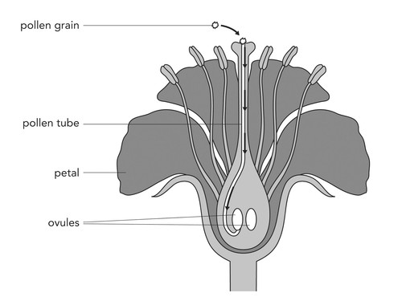<figcaption class="caption">Die stuifmeelbuis groei in die styl af tot by die vrugbeginsel.</figcaption></figure></li>
<li>Daar is 'n klein struktuur in die saadknop wat die <strong>embriosak</strong> genoem word. Wanneer die stuifmeelbuis in die saadknop ingroei, bevrug een van die manlike geslagselle die vroulike geslagsel in die embriosak.</li>
<li>Die bevrugte eiersel ontwikkel tot 'n embrio in die saad.</li>
<li>Die ander manlike geslagsel smelt saam met 'n ander sel in die embriosak om die <strong>endosperm</strong> te vorm. Endosperm is die styselagtige voedingstof wat in die saad gestoor word nadat dit ryp geword het. Later word hierdie voedsel gebruik om die ontkiemende saad te voed tot dit blare gevorm het en begin dit om self kos te maak deur foto'sintese.</li>
<li>Die vrugbeginsel begin dan swel en vergroot tot dit 'n vrug word.</li>
</ol><p/>
<div class="note col-md-6" data-type="visit">
<p>'n Eenvoudige animasie van bevrugting. <a data-class="ExternalLink" href="http://bit.ly/17lTvt1">bit.ly/17lTvt1</a></p>
</div>
<p/>
<div class="note col-md-6" data-type="takenote">
<p>'n Vrugbeginsel kan meer as een saadknop bevat. As elke saadknop bevrug word sal die vrug meer as een saad bevat. Dink byvoorbeeld aan 'n appel, met baie sade in elke vrug.</p>
</div>
<p/>
<figure><figcaption class="caption">In hierdie figuur, kan jy die stuifmeelbuise sien groei uit die individuele stuifmeelkorrels?</figcaption></figure><p/>
<div class="note col-md-6" data-type="didyouknow">
<p>Daar is 'n verskil tussen groente en vrugte!<strong>Vrugte</strong> is die ryp vrugbeginsels van blomdraende plante wat saad bevat, soos tamaties en lemoene. <strong>Groente</strong> is ander dele van die plant, soos die wortels, stingels en blare, byvoorbeeld geelwortels en kool.</p>
</div>
<p/>

<p>Na bevrugting begin die saadknop in die vrugbeginsel om in 'n saad te verander. Die vrugbeginsel se wand word die res van die vrug. Daar is groot verskeidenheid in die tipes sade en vrugte in die w&#234;reld.</p>

<p/>
<div class="note col-md-6" data-type="didyouknow">
<p>Die Coco de Mer-saad is groter as 'n mens se kop!</p>
</div>
<p/>
<figure><figcaption class="caption">Hierdie enkele saad van die Coco de Mer-plant is in die helfte deurgesny.<a href="http://www.flickr.com/photos/lindah/23347241/"> http://www.flickr.com/photos/lindah/23347241/ </a></figcaption></figure><figure>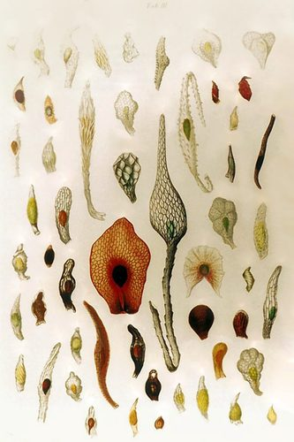<figcaption class="caption">Sade van verskillende spesies orgidie&#235;. Hulle is baie klein - soos stofdeeltjies.</figcaption></figure><p/>

<p>Dink aan al die verskillende vrugte wat jy in 'n winkel kan koop - daar is baie verskillende vorms, groottes en kleure!</p>
<figure><figcaption class="caption">Daar is baie kleure, vorms en groottes vrugte!</figcaption></figure><p/>

<p>Hoekom het plante so baie verskillende soorte sade en vrugte? Dit is omdat die sade na ander dele moet versprei word om in 'n nuwe plant te ontwikkel. Die vorms en strukture van die sade help hiermee. Die vrugte s'n ook. Ons s&#234; die vrugte en sade word <strong>versprei</strong>. Kom ons kyk na 'n paar maniere waarop sade versprei kan word.</p></div><div class="section"><h3 class="title" id="toc-id-5">Saadverspreiding</h3>
<p/>
<div class="note col-md-6" data-type="newwords"><ul data-class="ListBulleted"><li>swaartekrag</li>
</ul></div>
<p/>
<div class="note col-md-6" data-type="visit">
<p>Interaktiewe webblad oor die lewensiklus van plante <a data-class="ExternalLink" href="http://bit.ly/15R4ZYX">bit.ly/15R4ZYX</a></p>
</div>
<p/>

<p>Plante gebruik verskillende metodes om hulle sade so ver as moontlik van die ouerplant af te versprei. Hoekom dink jy moet die sade versprei word? Bespreek dit met jou onderwyser en die klas en maak notas. </p><hr/><hr/><hr/><div class="teachers-guide">
<p>Hou 'n klasbespreking oor hoekom sade versprei moet word. Leerders moet aangemoedig word om notas te neem aangesien hulle 'n vraag moet antwoord aan die einde van die hoofstuk. Hulle sal moet terugverwys na hierdie bespreking om hulle antwoorde te formuleer so dit is belangrik dat hulle begin leer om notas te neem. Jy kan selfs van die hoofpunte op die bord neerskryf.</p>

<p>'n Paar punte vir die bespreking:</p>
<ul data-class="ListBulleted"><li>Dit is belangrik dat sade na 'n ander habitat moet versprei as die een rondom die ouerplant.</li>
<li>As die geproduseerde sade reg onder die ouerplant ontkiem en groei mag dit dalk verouderde plante vervang, maar in die meeste gevalle sal dit in direkte kompetisie vir lig, minerale en water met die ouerplant wees.</li>
<li>Wanneer sade te naby aan mekaar groei kry hulle nie genoeg lig nie en raak lank en rankerig in 'n poging om by die sonlig uit te kom. Hulle is dan swak, met swak vrugvorming.</li>
<li>Om nie in kompetisie met die ouerplant te wees nie en sterk plante te vorm, moet die sade weg van die ouerplant versprei word. Die hoop is dat hulle in 'n beter  habitat sal beland waar hulle genoeg minerale, lig en water sal kry.</li>
</ul><p/>
</div>
<p>Verskillende plante het verskillende maniere om sade en vrugte te versprei. Kom ons kyk na sommige hiervan.</p>

<p/>
<div class="note col-md-6" data-type="visit">
<p>Kyk na die video wat die maniere waarop sade versprei kan word illustreer <a data-class="ExternalLink" href="http://bit.ly/178UyMS">bit.ly/178UyMS</a></p>
</div>
<p/>

<p><strong>Swaartekrag</strong>: Vrugte kan van 'n boom afval en so ver as moontlik van die ouerboom af rol. Wanneer die vrug afgeval het kan dit verder van die ouerplant gespoel word deur water, verder rol of deur diere weggedra word.</p>

<p/>

<p><strong>Diere</strong>: Diere kan die vrug van die plant af eet of nadat dit afgeval het. Die sade word dan weggedra in die dier se spysverteringsisteem. Die sade het 'n harde buitewand om te keer dat dit nie deur die dier verteer word nie. Party sade het stekelrige strukture wat aan die pels van diere kan vasklou. Hulle word dan weggedra soos die dier loop en val later af.</p>
<figure>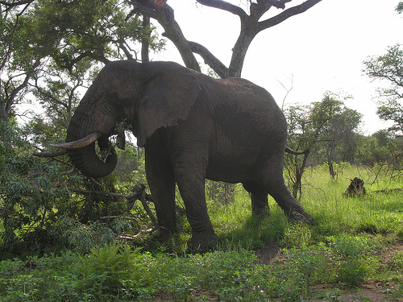<figcaption class="caption">Baie wilde diere hou daarvan om die vrugte van die marulaboom te eet. Hierdie olifant het die boom omgestoot om die vrugte by te kom. Die sade word later ver weg in die olifant se mis versprei.<a href="http://www.flickr.com/photos/mister-e/394295611/"> http://www.flickr.com/photos/mister-e/394295611/ </a></figcaption></figure><p/>
<div class="note col-md-6" data-type="didyouknow">
<p>Die ontwerp van Velcro is ge&#239;nspireer deur die klein hakies aan sade en klitse wat aan pels vashaak. Een deel van die Velcro strook haak vas aan die ander strook van die Velcro net soos die sade aan pels vashaak.</p>
</div>
<p/>

<p><strong>Plofkrag</strong>: Party plante se volwasse plantkapsules "ontplof"  en skiet die klein, ligte saadjies ver van die ouerplant af weg.</p>
<div class="teachers-guide">
<p>Die selle langs die opening is spesiaal ontwikkel om oop te skeur as daar drukking is. (Drie verdikte wande en een baie dun wand.)</p>
</div><figure><figcaption class="caption">Die saadpeule van Impatiens (aan die linkerkant) ontplof wanneer hulle aangeraak word (aan die regterkant) en skiet hulle sade uit om hulle te versprei.<a href="http://www.flickr.com/photos/benimoto/1386672443/"> http://www.flickr.com/photos/benimoto/1386672443/ </a></figcaption></figure><p/>
<div class="note col-md-6" data-type="didyouknow">
<p>Die "Sandbox"-boom wat in die Amasone-re&#235;nwoud voorkom, kan sy sade van 45 tot 100 meter ver skiet, teen snelhede van tot 252 km/h!</p>
</div>
<p/>
<div class="note col-md-6" data-type="visit">
<p>Video wat wys hoe ryp, geel bos-suringpeule oopbars om hulle sade te versprei <a data-class="ExternalLink" href="http://bit.ly/14Apbii">bit.ly/14Apbii</a></p>
</div>
<p/>

<p><strong>Wind</strong>: Windverspreiding vereis baie ligte, klein saadjies wat op die windstrome gedra kan word. Sommige sade het "vlerke",  soos perdeblomsaad, en kan dan baie ver deur die wind gewaai word.</p>
<figure>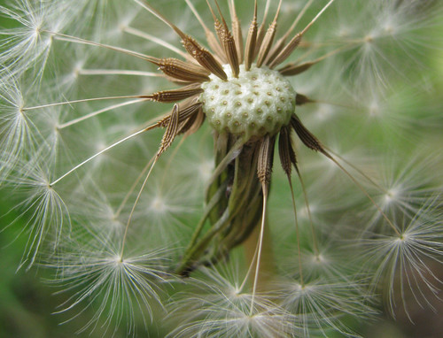<figcaption class="caption">Perdeblomsade word deur die wind versprei.</figcaption></figure><p/>

<p><strong>Water</strong>: Plante wat in of naby water bly gebruik die water om hulle sade te versprei. Wortelboom sade begin ontkiem wanneer hulle nog aan die ouerplant is, val dan in die see en wag tot hulle uitgespoel word om verder te ontkiem en te groei.</p>
<figure><figcaption class="caption">'n Wortelboom saad wat in die water dryf.</figcaption></figure><p/>

<p>Onthou jy dat ons bespreek het hoe die verskillende blomstrukture aangepas is vir bestuiwing deur diere of wind of water? Op dieselfde manier is die sade en vrugte ook aangepas vir hulle verspreidingsmetode.</p>

<p/>
<div class="note col-md-6" data-type="visit">
<p>Hersien al die maniere waarop plante hulle sade kan versprei <a data-class="ExternalLink" href="http://bit.ly/1bf1nzm">bit.ly/1bf1nzm</a></p>
</div>
<p/>
<div class="activity" data-type="Activity"><h1 class="title">Bestudeer verskillende soorte sade</h1><div class="teachers-guide">
<p>Indien moontlik, probeer om voorbeelde van hierdie verskillende sade, peule en vrugte bymekaar te maak en klas toe te bring vir hierdie aktiwiteit. Die leerders kan daarna kyk en die sade wat deur die wind versprei word in die lug gooi om te sien hoe dit beweeg. Dit sal hulle help om die aanpassings te verstaan. Verduidelik aan die leerders dat hulle die aanpassing moet verduidelik en dan hoe die struktuur die funksie help. Die algemeenste manier om dit te doen is om die struktuur te beskryf en dan te beskryf hoe dit die funksie help verrig. Normaalweg sal dit in die formaat wees van: Die saad het "x-struktuur"  <strong>sodat</strong> dit "y-funksie"  kan verrig.</p>
</div>
<p/>

<p><strong>INSTRUKSIES:</strong></p>
<div class="exercises"><div class="problemset"><div class="entry"><div class="problem">Kyk na die volgende tabel met verskillende soorte sade. Elkeen word op 'n ander manier versprei.</div><div class="solution">
<p/>
</div></div><div class="entry"><div class="problem">In die tweede kolom, skryf neer hoe die sade versprei word (byvoorbeeld deur 'n dier, deur die wind, deur water, ens).</div><div class="solution">
<p/>
</div></div><div class="entry"><div class="problem">
<p>In die derde kolom, skryf 'n paar sinne om te verduidelik hoe jy dink die saad aangepas is vir verspreiding. Jy moet dink aan wat hierdie saad die meeste gaan help om versprei te word.</p>

          
           <table class="too-large"><tr><td><p><strong>Saad</strong></p></td><td><p><strong>Hoe word dit versprei?</strong></p></td><td><p><strong>Watter aanpassings het die saad of plant vir verspreiding?</strong></p></td></tr><tr><td><figure id="gd-idp15536880">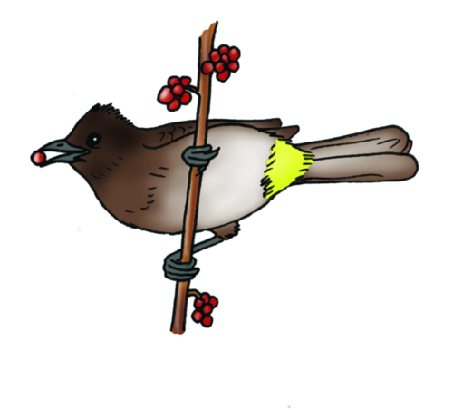</figure></td><td><p/></td><td><p/></td></tr><tr><td><figure id="gd-idp3995696"></figure></td><td><p/></td><td><p/></td></tr><tr><td><figure id="gd-idm669632">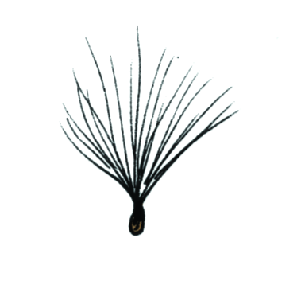</figure></td><td><p/></td><td><p/></td></tr><tr><td><figure id="gd-idm4694384">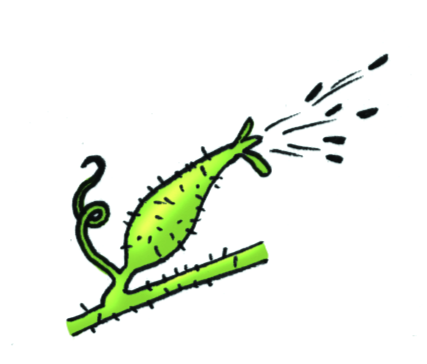</figure></td><td><p/></td><td><p/></td></tr><tr><td><figure id="gd-idp5604192"></figure></td><td><p/></td><td><p/></td></tr><tr><td><figure id="gd-idp15774960">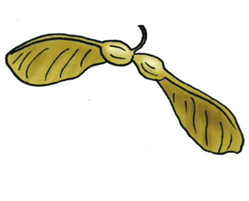</figure></td><td><p/></td><td><p/></td></tr><tr><td><figure id="gd-idm2431296"></figure></td><td><p/></td><td><p/></td></tr><tr><td><figure id="gd-idm3465504">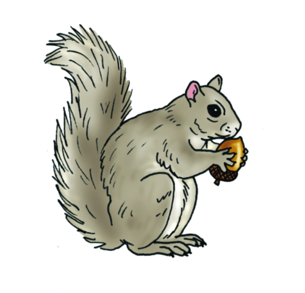</figure></td><td><p/></td><td><p/></td></tr></table><p/>
</div><div class="solution">
<p/><table><tr><td><p><strong>Saad</strong></p></td><td><p><strong>Hoe word dit versprei?</strong></p></td><td><p><strong>Watter aanpassings het die saad of plant vir verspreiding?</strong></p></td></tr><tr><td><figure id="gd-idm3550112"></figure></td><td><p>Deur 'n dier (vo&#235;l)</p></td><td><p>Die sade is in vrugte (bessies) wat die vo&#235;ls graag eet. Die sade beweeg deur die vo&#235;l se spysverteringskanaal en word ver van die ouerplant versprei in die vo&#235;lmis. Die sade het 'n harde buitelaag wat nie verteer word deur die vo&#235;l nie. Hierdie aanpassing sorg dat die saad nie verteer word deur die vo&#235;l se spysvertering nie.</p></td></tr><tr><td><figure id="gd-idp16350720">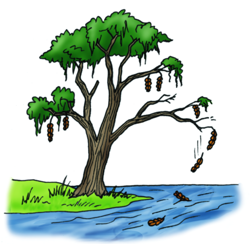</figure></td><td><p>Deur water</p></td><td><p>Hierdie bome groei gewoonlik naby water. Die sade val af in die water en word weggespoel. Die sade is aangepas om te dryf (hulle dobber) sodat hulle ver rivierlangs kan beweeg na 'n nuwe habitat.</p></td></tr><tr><td><figure id="gd-idp11814192"></figure></td><td><p>Deur die wind</p></td><td><p>Die saad is baie lig en kan deur die wind weggewaai word. Die is "veeragtig" sodat dit die wind vang en kan reis.</p></td></tr><tr><td><figure id="gd-idm6590144"></figure></td><td><p>Deur plofkrag</p></td><td><p>Die saadpeul kan reageer op aanraking en dan oopbars. Dit is voordelig omdat al die peule dan nie gelyk oopbars nie, maar geleidelik afhangend van wanneer hulle aangeraak word. Die sade is klein en lig sodat hulle ver uit die peul geskiet kan word.</p></td></tr><tr><td><figure id="gd-idp15020784">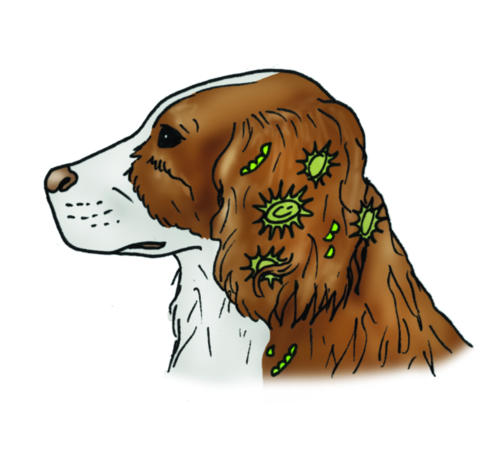</figure></td><td><p>Deur 'n dier (hond)</p></td><td><p>Die sade het klitse (klein hakies) wat aan die pels van die hond vashaak. Soos die saad droogword of as dit aan iets ander haak, val dit van die hond af. Die sade is gewoonlik op diere-hoogte aan die plant.</p></td></tr><tr><td><figure id="gd-idp843088"></figure></td><td><p>Deur die wind</p></td><td><p>Hierdie sade is partykeer groot, maar steeds lig sodat hulle deur die lug kan vervoer word. Die "vlerke"  is lig en het 'n groot oppervlakarea om lugstrome optimaal te kan gebruik. Die saad tol soos dit waai en die beweging laat dit verder waai.</p></td></tr><tr><td><figure id="gd-idm5697744">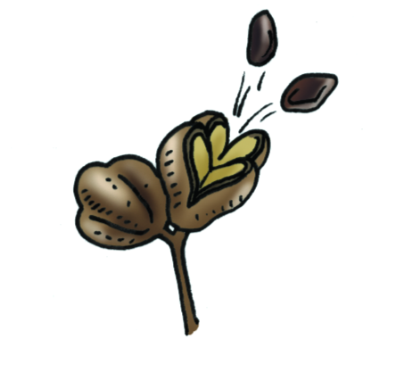</figure></td><td><p>Deur plofkrag</p></td><td><p>Die saadpeule bars oop wanneer hulle droog word en begin kraak. Dit verseker dat die sade gereed is om te versprei. Die sade is kleinerig sodat dit maklik kan versprei.</p></td></tr><tr><td><figure id="gd-idp15049504"></figure></td><td><p>Deur 'n dier (eekhoring)</p></td><td><p>Akkers word versprei deur eekhorings wat die neute bymekaarmaak. Eekhorings hou daarvan om die neute te eet en maak dit bymekaar in 'n stoorplek. Party akkers word ge&#235;et, maar ander word begrawe en vergeet deur die eekhoring. Hierdie akkers kan dan later ontkiem en begin groei. Akkers is hard en kan lank gestoor word sonder om hulle ontkiemingspotensiaal te verloor.</p></td></tr></table></div></div></div></div>
</div>

<p/>

<p>Ons het nou klaar gekyk hoe angiosperma voortplant. Ons gaan hierna na voortplanting by diere kyk. Ons gaan spesifiek menslike voortplanting bestudeer, sodat ons meer kan leer oor ons eie liggame en hoe dit funksioneer.</p></div></div><div class="section"><h2 class="title" id="toc-id-6">Menslike voortplanting</h2><div class="teachers-guide">
<p>Wees bewus daarvan dat leerders ongemaklik mag wees om voortplanting in die klaskamer te bespreek. Hulle sal moontlik lag of onvanpaste grappe maak om hulle ongemak te probeer wegsteek.</p>

<p/>

<p><strong>'n Paar wenke wanneer jy menslike voortplanting moet behandel.</strong></p>
<ol data-class="ListEnumerated"><li>Respekteer jou leerders se vrae en bekommernisse. Party van hulle het moontlik nie voorheen die geleentheid gehad om vrae oor voortplanting te vra nie, veral as hulle ouers nie gemaklik is daarmee om hierdie onderwerp met hulle te bespreek nie. Dit is 'n sensitiewe onderwerp en leerders mag te skaam wees om vrae te vra. Moedig hulle aan om vrae te vra sonder inhibisies of skaamte.</li>
<li>Bespreek prosesse openlik sodat leerders gemaklik in die klasomgewing kan praat en leer oor voortplanting en hoe dit hulle lewens be&#239;nvloed. Ontmoedig en dissiplineer enige gelag of onbeskofte gedrag van ander leerders. Dring daarop aan dat leerders die gepaste wetenskaplike terme gebruik wanneer hulle vrae vra en tydens besprekings. Dit behoort die meeste leerders te keer om opsetlik vulg&#234;r te wees. </li>
<li>'n Gasspreker kan genooi word. Leerders mag meer gemaklik wees om vrae aan 'n vreemdeling te vra. As jy 'n spesialis nooi, soos 'n ginekoloog of 'n vroedvrou, mag die leerders die onderwerp dalk ernstiger opneem. Dit kan ook handig wees om iemand van FAMSA te kry om met die leerders te praat. Opgeleide FAMSA fasiliteerders sal die klas in kleiner groepe opdeel sodat dit makliker is om vrae te vra.</li>
<li>Indien nodig kan jy die seuns en dogters skei. Wanneer jy byvoorbeeld 'n grafiese video oor die vroulike voortplantingsorgane vertoon mag dit wenslik wees om die seuns 'n soortgelyke video, wat die manlike voortplantingsorgane behandel, in 'n ander vertrek te laat kyk. Ten minste een keer gedurende hierdie afdeling behoort seuns en dogters geskei te word sodat leerders gemaklik kan voel om vrae wat hulle nie voor die ander geslag wil vra nie, te vra.</li>
<li>Moenie die voortplantingstelsel as negatief of "verbode"  uitbeeld nie, aangesien dit die ongemak wat die leerders al klaar mag voel kan vererger. Op hierdie stadium in hulle lewens is leerders baie ge&#239;nteresseerd in voortplanting en die veranderinge waardeur hulle liggame gaan. Dit is natuurlik en moet aangemoedig word sodat hulle opgevoed kan word en ingeligte keuses oor hulle seksuele gesondheid in die toekoms kan maak.</li>
<li>Hier is 'n webblad met verdere leeswerk:<a data-class="ExternalLink" href="http://www.google.com/url?q=http%3A%2F%2Fezinearticles.com%2F%3FTeaching-Teens-About-the-Reproductive-System%26id%3D1471773&amp;sa=D&amp;sntz=1&amp;usg=AFQjCNGs8PlxebP5EtbvOrbsz6PVQn4uSA"/><a data-class="ExternalLink" href="http://bit.ly/1cfWcTS">bit.ly/1cfWcTS</a> en verdere hulpbronne en pdf's kan by <a data-class="ExternalLink" href="http://bit.ly/19PWW09">bit.ly/19PWW09</a> gevind word.</li>
</ol><p/>
</div><div class="note col-md-6" data-type="newwords"><ul data-class="ListBulleted"><li>hormoon</li>
<li>volwasse</li>
<li>menstruasie</li>
<li>penis</li>
<li>puberteit</li>
<li>sperm</li>
</ul></div>
<p/>

<p>As jy na jou Gr 7 klasmaats kyk sal jy waarskynlik oplet dat jy en jou vriende aansienlik verander het sedert Gr 1. Behalwe dat julle langer geword het en ander haarstyle en klerestyle het, het julle liggame ook verander en grootgeword. Ons s&#234; dat julle besig is om <strong>volwasse</strong> word.</p>

<p/>

<p>Jy moet die veranderinge in jou liggaam en hoekom dit gebeur probeer verstaan, sodat jy die volgende paar jaar die proses, waartydens jy 'n jong volwassene gaan word, kan hanteer.</p>

<p/>
<div class="teachers-guide">
<p>Tydens hierdie afdeling mag dit handig wees om 'n houer uit te sit waarin leerders vrae kan plaas voor die aanvang van die les. Beklemtoon aan die leerders dat dit 'n naamlose oefening is en dat hulle nie hulleself hoef te identifiseer nie. Jy kan die vrae dan voor die tyd filter en onvanpaste vrae uithaal. Jy kan ook probleemareas, misverstande en bekommernisse van die leerders, wat te skaam is om vrae te vra, identifiseer. Probeer om hierdie naamlose vrae te antwoord tydens die afdeling. Jy kan die klas as geheel geheel vra wat hulle al klaar weet van menslike voortplanting. Hou in gedagte dat party leerders al klaar heelwat kan weet (omdat hulle ouers met hulle gesels het daaroor of uit hulle eie verkennings) terwyl ander baie min mag weet. Wys dit uit en beklemtoon dat dit nie verkeerd is nie en dat hulle almal teen die einde van die afdeling die basiese inligting oor menslike voortplanting sal weet. Deur hulle te vra wat hulle klaar weet, kan jy die leerders aanmoedig om daaroor 
te praat in die klas en om nie ongemaklik te wees of grappe te maak en mekaar te terg nie. Jy kan selfs 'n paar basiese vrae vra, byvoorbeeld:</p>
<ul data-class="ListBulleted"><li>Hoekom moet mense voortplant? (Om kinders voort te bring om die voortbestaan van ons spesie te verseker. Dit is anders as om te vra hoekom mense geslagsomgang het, wat ook vir genot met jou maat is.)</li>
<li>Weet jy hoe lank is swangerskap voor die baba gebore word? (9 maande)</li>
<li>Wat noem ons die stadium in die mens lewe waartydens hy deur fisiese en emosionele veranderinge gaan soos wat hy geslagsryp word? (puberteit)</li>
</ul><p>Leerders het 'n reg tot privaatheid tydens hierdie afdeling. Daar kan moontlik slagoffers van seksuele misdrywe in die klas wees en die onderwyser moet bewus wees daarvan en sensitief optree. Dit is ook gepas om aan die dogters te beklemtoon dat hulle mag  "NEE"  s&#234; aan opdringerige seuns. Onderwysers moet die leerders aanmoedig om te wag totdat hulle ouer is voordat hulle seksueel aktief word.</p>
</div><div class="section"><h3 class="title" id="toc-id-7">Hoekom is dit nodig dat mense moet kan voortplant?</h3>
<p>Mense moet kan voortplant om die voortbestaan van die spesie te verseker. Soos angiosperma plante kan mense ook geslagtelik voortplant. Dit beteken dat menslike voortplanting 'n man en 'n vrou vereis en dat 'n nuwe mens gevorm word deur die genetiese materiaal (DNS) van die ouers te kombineer. Die kind sal die helfte van sy genetiese materiaal (DNS) van sy ma en die ander helfte van sy pa kry. Om dit te laat gebeur moet die <strong>sperm</strong> (van die man) met die <strong>ovum (eiersel)</strong> (van die vrou) saamsmelt om 'n nuwe individu voort te bring. Ons voortplantingsorgane is aangepas vir hierdie funksies.</p>

<p/>

<p>Ons voortplantingsorgane moet volwassenheid bereik. Dit gebeur tydens 'n fase van ons lewe wat as <strong>puberteit</strong> bekend staan.</p>

<p/></div><div class="section"><h3 class="title" id="toc-id-8">Puberteit</h3>
<p>Wanneer 'n seun of dogter 'n sekere stadium van groei en ontwikkeling bereik het, begin die voortplantingsorgane ook volwasse word. Seuns en dogters gaan gewoonlik nie deur puberteit op presies dieselfde ouderdom nie:</p>
<ul data-class="ListBulleted"><li>Dogters gaan deur puberteit op tussen 10/11 - 14/15 jaar oud.</li>
<li>Seuns gaan deur puberteit op tussen 12/13 - 15/16 jaar oud.</li>
</ul><p>Gedurende puberteit sal jy verskillende fisiese en emosionele veranderinge ervaar soos jou liggaam ontwikkel tot geslagsrypheid. Kom ons kyk na sommige van hierdie veranderinge wat tydens puberteit plaasvind.</p>

<p/>
<div class="activity" data-type="Activity"><h1 class="title">Wat gebeur tydens puberteit?</h1>
<p/>

<p><strong>INSTRUKSIES:</strong></p>
<ol data-class="ListEnumerated"><li>
<p>Bestudeer die afbeeldings van 'n dogter op 10, 12 en 17, en van 'n seun op 10, 12 en 17.</p>
</li>
</ol><p><strong>VRAE:</strong></p>
<div class="exercises"><div class="problemset"><div class="entry"><div class="problem">
<p>Identifiseer die veranderinge wat albei deurgaan tydens puberteit en vul dit in die tabel in.</p>

         
<p/>

          <figure id="gd-idm6733024">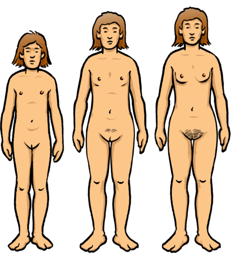</figure><figure id="gd-idm7563968">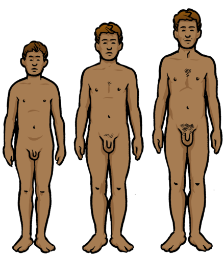</figure><table><tr><td><p><strong>Veranderinge in die dogter</strong></p></td><td><p><strong>Veranderinge in die seun</strong></p></td></tr><tr><td><p/>

                    
<p/>

                    
<p/>

                    
<p/>

                    
<p/>

                    
<p/>

                    
<p/></td><td><p/></td></tr></table></div><div class="solution">
<p/><p/>

          <table><tr><td><p><strong>Veranderinge in die dogter</strong></p></td><td><p><strong>Veranderinge in die seun</strong></p></td></tr><tr><td><p>Veranderende liggaamsvorm en figuur</p>

                    
<p>Onderhuidse vet vermeerder</p>

                    
<p>Borste begin ontwikkel</p>

                    
<p>Gelaatstrekke word meer volwasse</p>

                    
<p>Hare groei onder die arms en op die bene</p>

                    
<p>Skaamhare begin groei</p>

                    
<p>(Aknee/puisies by sommige individue)</p></td><td><p>Veranderende liggaamsvorm en figuur</p>

                    
<p>Meer gespierd</p>

                    
<p>Penis word groter</p>

                    
<p>Gelaatstrekke word meer volwasse</p>

                    
<p>Hare groei onder die arms en op die bene, gesig en bors</p>

                    
<p>Skaamhare begin groei</p>

                    
<p>(Aknee/puisies by sommige individue)</p></td></tr></table><p/>
</div></div><div class="entry"><div class="problem">
<p>Bestudeer die volgende grafiek en beantwoord die vrae wat volg.</p>

	    <figure id="gd-idp4351392">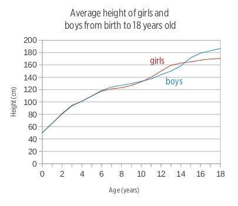</figure><p>Watter tipe grafiek is hierdie? </p><hr/></div><div class="solution">
<p/><p>'n Lyngrafiek (of 'n groeikurwe-grafiek)</p>

	     
<p><strong>Let op:</strong> Beklemtoon dat hierdie grafiek GEMIDDELDE lengtes aantoon. Dit wys nie net die verskil tussen een seun en een dogter nie, maar eerder die verskil tussen die gemiddelde lengte van 'n groot groep seuns en 'n groot groep dogters. Vra die leerders hoekom hulle dink dit belangrik is. (Daar sal altyd 'n paar uitsonderings wees van ouer mense wat korter is as jongmense en dogters wat langer is as seuns, maar die gemiddelde help ons om die algemene neiging, wat vir die meeste mense geld, te ondersoek.)</p>
</div></div><div class="entry"><div class="problem">
<p>Watter inligting word deur hierdie grafiek verskaf? </p><hr/></div><div class="solution">
<p/><p>Die algemene toename in gemiddelde lengte van seuns en dogters vanaf geboorte tot 18 jarige ouderdom.</p>
</div></div><div class="entry"><div class="problem">
<p>In 'n grafiek is daar twee veranderlikes. Die onafhanklike veranderlike word langs die horisontale x-as geplaas. Die afhanklike veranderlike is die veranderlike wat verander afhangende van die onafhanklike veranderlike, en dit word langs die vertikale y-as geplaas. Identifiseer die onafhanklike veranderlike en die afhanklike veranderlike wat in hierdie studie gebruik is, gebaseer op die grafiek. </p><hr/><hr/></div><div class="solution">
<p/><p>Onafhanklike veranderlike: die ouderdom van die seuns en dogters</p>

          
<p>Afhanklike veranderlike: gemiddelde toename in lengte</p>

	  
<p><strong>Let op:</strong> Jy kan aan leerders verduidelik dat die lengte afhang van die ouderdom van die seuns en dogters en daarom die afhanklike veranderlike is. Soos kinders ouer word, word hulle ook langer. Lengte is dus afhanklik van ouderdom.</p>
</div></div><div class="entry"><div class="problem">
<p>In watter maateenheid word lengte gemeet? Wat is die maateenheid vir ouderdom? </p><hr/><hr/></div><div class="solution">
<p/><p>Lengte word gemeet in sentimeter (cm) en ouderdom in jare.</p>


<p><strong>Let op:</strong> Wys die leerders daarop dat 'n grafiek se asse altyd benaam moet wees en as daar 'n maateenheid is, moet dit altyd in hakies ingesluit word na die opskrif.</p>
</div></div><div class="entry"><div class="problem">
<p>Verduidelik in woorde wat jy dink hierdie grafiek ons vertel van hoe seuns en dogters groei van 0 tot 18 jarige ouderdom. Vergelyk die verskillende lyne vir seuns en dogters. Wat kan jy aflei uit die gemiddelde lengtes soos hulle ouer word? Antwoord die volgende vrae om jou te help om die grafiek te interpreteer.</p>

<ol data-class="ListEnumerated"><li>
<p>Daar is twee lyne op die grafiek. Wat word deur elke lyn voorgestel? Gebruik die kleure in jou antwoord. </p><hr/><hr/></li>
<li>
<p>Hoekom oorvleuel die lyne vir seuns en dogters van 0 tot 6 jaar? Wat s&#234; dit vir ons van die lengte van seuns en dogters tot op 6 jarige ouderdom? </p><hr/><hr/></li>
<li>
<p>Na 6 jaar en tot op 10-jarige ouderdom skei die grafieklyne vir seuns en dogters. Watter lyn is bo? Wat s&#234; dit vir jou? </p><hr/><hr/></li>
<li>
<p>Op watter ouderdom is seuns en meisies ongeveer ewe lank? Hoe kan jy dit uit die grafiek aflei?</p><hr/><hr/></li>
<li>
<p>Is seuns die langste of is dogters oor die algemeen die langste as hulle 18 jaar oud is? Wat is die gemiddelde lengte van seuns en meisies op die ouderdom van 18 jaar? Lees dit van die grafiek af. </p><hr/><hr/><hr/></li>
</ol></div><div class="solution">
<p/><p><strong>Let op:</strong> Die vertolking van grafieke is oor die algemeen 'n onontbeerlike vaardigheid in Natuurwetenskap. Leerders mag dit moeilik vind om te verduidelik wat hulle in hierdie grafiek sien. U moet stap vir stap met hulle deur die vertolking van die grafiek werk.</p>

  <ol data-class="ListEnumerated"><li>Die blou lyn stel die gemiddelde lengte van seuns voor soos wat hulle ouer word. Die rooi lyn stel die gemiddelde lengte van meisies voor soos wat hulle ouer word.</li>
<li>Dit beteken dat seuns en dogters tot en met die ouderdom van 6 jaar, gemiddeld, ewe lank is. </li>
<li>Die grafieklyn vir seuns is aan die bokant. Dit s&#234; vir ons dat seuns tussen 6 en 10 jaar oud, oor die algemeen, langer as meisies is. </li>
<li>Ongeveer by die ouderdom van 10, is die gemiddelde lengte vir seuns en meisies weer dieselfde. Dit kan van die grafiek afgelees word (waar die twee lyne kruis). Rondom die ouderdom van 14 en 'n half is die gemiddelde seun en meisie weer ewe lank.</li>
<li>Seuns is oor die algemeen langer as meisies op die ouderdom van 18. Die gemiddelde seun van 18 is omtrent 187 cm lank en die gemiddelde dogter 171 cm.</li>
</ol><p><strong>Let op:</strong> U sal moontlik die leerders moet help deur hulle te wys hoe om waardes van 'n grafiek af te lees. Hulle behoort hulle liniale te gebruik en moet 'n lyn trek vanaf 18 jaar oud na die y-as om te sien waar die lyn wat hulle getrek het die y-as sny. Hiervolgens moet hulle op die skaal aflees wat die lengte van seuns en dogters op die ouderdom van 18 is.</p>
</div></div><div class="entry"><div class="problem">
<p>'n Vinnige groeifase is wanneer kinders vinniger groei in sommige jare as in ander. Beantwoord die volgende vrae om jou te help om dit te verstaan.</p>

  <ol data-class="ListEnumerated"><li>
<p>Wat kan jy gebruik om 'n vinnige groeifase in die grafiek te identifiseer? Wenk: 'n Vinnige groeifase beteken dat seuns en dogters se lengte gedurende sommige tye vinniger toeneem as gedurende ander tye.</p>

<p/><hr/></li>
<li>
<p>Op die grafiek kan ons sien dat daar 'n vinnige groeifase vir meisies en 'n vinnige groeifase vir seuns is. Gebeur dit tydens dieselfde ouderdom vir seuns en meisies?</p><hr/></li>
<li>
<p>Gedurende watter ouderdom vind hierdie vinnige groeifases by seuns en by meisies plaas?</p><hr/><hr/></li>
<li>
<p>Hoekom dink jy het hierdie vinnige groeifases op daardie spesifieke tye plaasgevind? Wenk: Dink terug aan die puberteitsouderdom van beide seuns en meisies en hoe dit verskil. </p><hr/><hr/></li>
</ol></div><div class="solution">
<p/><ol data-class="ListEnumerated"><li>'n Skerp styging in die lyn van die grafiek toon 'n vinnige groeifase aan.</li>
<li>Nee.</li>
<li>Seuns toon 'n vinnige groeifase tussen die ouderdomme van 14 en 16. Meisies toon 'n vinnige groeifase tussen die ouderdomme van 11 en 13.</li>
<li>Hierdie vinnige groeifases kom ooreen met die ouderdom waarop meisies en seuns puberteit bereik. Meisies bereik hierdie fase effens vro&#235;er as seuns.</li>
</ol></div></div><div class="entry"><div class="problem">Maak 'n X op die grafiek om aan te dui, volgens jou ouderdom, waar jy in hierdie proses is.</div><div class="solution">
<p/><p>Individuele leerders moet dit op hulle grafieke merk.</p>
</div></div><div class="entry"><div class="problem">
<p>Gebruik die data in die grafiek om aan te dui watter veranderinge jy in jou lengte kan verwag as jy die normale groeipatroon sou volg? </p><hr/><hr/></div><div class="solution">
<p/><p>Leerder-afhanklike antwoord</p>
</div></div><div class="entry"><div class="problem">
<p>Voorspel, deur te kyk na jou familiegeskiedenis en die lengte van mense in jou familie, of jy die kurwe gaan volg en of jy verwag om korter of langer as die gemiddelde persoon van jou ouderdom te wees. </p><hr/><hr/></div><div class="solution">
<p/><p>Leerder-afhanklike antwoord</p>
</div></div></div></div>
<div class="teachers-guide">
<p>Indien u die leerders wil uitdaag kan u hulle vra of dit teen hierdie tempo sal aanhou tussen die ouderdomme van 25 en 35 (nee, lengte bly stabiel). Wat dink hulle sal die tendens wees tussen die ouderdom van 65 en 85 (Ouer mense verloor gewoonlik 'n bietjie lengte as gevolg van die feit dat hulle rugwerwels saampers (of buig)).</p>
</div>
<p/>
</div>

<p/>

<p>Die volgende tabel som die fisiese veranderings, wat tydens puberteit plaasvind, op.</p>

<p/>
<table><tr><td><p><strong>Fisiese veranderings by meisies gedurende puberteit</strong></p></td><td><p><strong>Fisiese veranderings by seuns gedurende puberteit</strong></p></td></tr><tr><td><ul data-class="ListBulleted"><li>Die <strong>geslagsorgane</strong> (vagina, uterus en die ovaria) begin om geslagsryp te word.</li>
<li><strong>Pubiese hare</strong> begin om op die geslagsdele te groei.</li>
<li><strong>Menstruasie en vrugbaarheid</strong>: meisies het hulle eerste menstruele bloeding. <strong>Menstruasie</strong> is 'n teken dat die ovaria begin het om <strong>hormone</strong> af te skei en ova (eierselle) vry te stel. Dit is 'n teken dat die meisie nou vrugbaar is en swanger kan raak.</li>
<li><strong>Liggaamsvorm</strong>: veranderinge kom voor soos dat die middel meer gedefinieer word en haar heupe br&#235;er (om plek te maak vir geboorte van 'n kind). Daar is 'n toename in onderhuidse liggaamsvet.</li>
<li><strong>Borste</strong> begin ontwikkel</li>
<li><strong>Liggaamsreuk</strong> is 'n tipiese deel van puberteit. Die vel produseer meer olie en die reuk van sweet verander. </li>
<li><strong>Aknee en puisies</strong> kan voorkom as gevolg van hormonale veranderinge en 'n toename in olie-afskeiding van die vel.</li>
</ul><p/></td><td><ul data-class="ListBulleted"><li>Die <strong>geslagsorgane</strong> (testes en penis)  begin om te ontwikkel.</li>
<li><strong>Pubiese hare</strong> begin om op die geslagsdele te groei.</li>
<li><strong>Vrugbaarheid</strong>: die testes begin om spermselle te produseer. Hierdie spermselle kan die vroulike eiersel bevrug, nadat geslagsgemeenskap plaasgevind het.</li>
<li><strong>Liggaamsvorm:</strong> veranderinge vind plaas soos wat been- en spiergroottes toeneem om die jong man 'n sterker, meer spierkragtige voorkoms te gee.</li>
<li><strong>Stem-verandering</strong> kom voor. Die stem word dieper.</li>
<li><strong>Liggaamsreuk  </strong> is 'n tipiese kenmerk van puberteit. Die vel produseer meer olie en die reuk van sweet verander.</li>
<li><strong>Aknee en puisies</strong> kan voorkom as gevolg van hormonale veranderinge en 'n toename in olie-afskeiding van die vel.</li>
</ul></td></tr></table><p/>
<div class="note col-md-6" data-type="visit">
<p>Leer meer oor puberteit by meisies <a data-class="ExternalLink" href="http://bit.ly/13J6Pcd">bit.ly/13J6Pcd</a></p>
</div>
<p/>
<div class="note col-md-6" data-type="visit">
<p>Leer meer oor puberteit by seuns <a data-class="ExternalLink" href="http://bit.ly/1cNfFZQ">bit.ly/1cNfFZQ</a></p>
</div>
<p/>

<p>Baie jong mense merk op dat hulle emosies met hulle weghardloop gedurende puberteit. Hierdie is nie net 'n tydperk van volwasse word en fisies groei nie. Dit is ook 'n emosionele tydperk.</p>

<p/>
<div class="teachers-guide">
<p>U moet kontroleer wat die Lewensori&#235;ntering-onderwyser van u leerders op hierdie stadium met die leerders behandel ten opsigte van seksuele volwassenheid, emosionele veranderinge en self-bewuswording. Sommige van die veranderinge wat leerders sal ervaar word hieronder gelys. Indien tyd dit toelaat kan u leerders 10 minute gee vir selfbepeinsing. U kan hulle selfs na buite toe stuur om in stilte , op hulle eie, te sit. Na hierdie oefening kom hulle terug klas toe en bespreek die onderwerp. U kan die volgende onderwerpe bespreek:</p>
<ul data-class="ListBulleted"><li><strong>Sterk gevoelens</strong>: puberteit is 'n baie emosionele tydperk vir baie jongmense waartydens hulle sterk emosies ervaar. Hierdie emosies duur egter net vir 'n kort tydjie. Ons noem dit "buie". Die een oomblik voel hulle gelukkig en opgewonde terwyl hulle met hulle vriende gesels maar wanneer hulle huis toe stap en by die huis aankom voel hulle, sonder enige werklike rede, sleg en terneergedruk. Dit mag lei tot gevoelens van angs en frustrasie wat lei tot woede-uitbarstings met geliefdes soos hulle ouers, sowel as met hulle broers en susters. Aangesien jong mense wat deur die puberteitstadium gaan nog leer om hierdie gevoelens en emosies te hanteer, ervaar hulle dit as 'n baie moeilike tyd. Dit mag verbeter soos wat hulle leer hoe om hierdie gevoelens konstruktief te hanteer deur hulself, onder andere, uit die situasie te verwyder as hulle 'n emosionele uitbarsting ervaar wat hulle nie kan beheer nie.</li>
<li><strong>Meer sensitief</strong>: dit skakel ten nouste met die nuwe en ongemaklike gevoelens. Jong mense wat deur die puberteitstadium gaan mag meer sensitief wees ten opsigte van die aksies en bedoelings van die mense om hulle. Hulle mag baie keer die gesigsuitdrukkings van mense verkeerd lees. Dit kom op hierdie stadium voor asof hulle oorsensitief is. Soos wat hulle volwasse word leer hulle om gesigsuitdrukkings te lees en te interpreteer. Hulle leer ook om die liggaamsuitdrukkings van ander mense meer akkuraat te vertolk, asook om die verskuilde en bedoelde boodskappe te verstaan en daarop te reageer op 'n beheerste manier.</li>
<li><strong>Meer selfbewus</strong>: sommige jongmense wat deur puberteit gaan, met die meegaande fisiese en emosionele veranderinge wat dit meebring, is baie meer selfbewus as ander. Hulle word meer besorg oor hulle fisiese voorkoms en neig om hulle liggame met di&#233; van "sterre", hulle vriende en rolmodelle te vergelyk. Indien hulle nie klink of lyk soos wat hulle graag wil wees nie, kan dit die manier hoe hulle oor hulself voel, be&#239;nvloed. Ons noem dit hulle selfbeeld.</li>
<li><strong>Op die uitkyk vir nuwe ervaringe</strong>: as gevolg van die vele fisiese veranderinge wat die hormone in hul liggame veroorsaak, sal jong mense meer geneig wees om op die uitkyk te wees vir nuwe ondervindinge en dan begin om nuwe we&#235; te ondersoek. Dit kan lei tot gevaarlike, riskante gedrag wat die jong persoon se lewe in gevaar kan stel en enige toekomsplanne kan dwarsboom. Soos wat hulle ouer word, behoort hulle te leer hoe om hierdie impulse te beheer en verstandiger keuses te maak. </li>
<li><strong>Ontdek hul seksuele identiteit</strong>: gedurende hierdie tyd begin jong mense om romantiese verhoudings aan te knoop of om op afsprake te gaan. Baie jong mense verkies om te wag tot hul ouer is voordat hulle seksueel aktief raak. Daar is egter ander wat in die soeke na nuwe sensasies en ondervindinge probeer uitvind waaroor seks gaan. Dit is baie belangrik dat hulle bewus moet wees van die risiko's hieraan verbonde en hulself (en hulle toekoms) beskerm indien hulle wel besluit om seks te h&#234;. (Dit is een van die mikpunte van hierdie hoofstuk!)</li>
</ul></div>
<p/>

<p>Daar vind so baie dinge in jou lewe plaas. Kom ons trek 'n tydlyn om dit aan te toon!</p>

<p/>
<div class="activity" data-type="Activity"><h1 class="title">Trek 'n tydlyn van jou lewe</h1><div class="teachers-guide">
<p>Hierdie kan 'n baie <strong>sensitiewe taak</strong> vir leerders wees, veral indien hulle reeds trauma in hul lewens ervaar het. U moet dit daarom versigtig en sensitief benader, sodat leerders gemaklik sal voel om dit te doen. Sommige leerders mag ook nie wil h&#234; dat hul tydlyne tentoon gestel word nie, daarom is hierdie 'n persoonlike aktiwtiteit vir die leerders om te doen, sonder enige druk om dit vir die res van die klas te moet wys.</p>
</div>
<p/>

<p>'n Tydlyn is 'n voorstelling van hoe tyd verby gaan en die gebeurtenisse wat plaasvind.</p>

<p/>

<p><strong>INSTRUKSIES:</strong></p>
<ol data-class="ListEnumerated"><li>Trek 'n persoonlike tydlyn van jou lewe tot dusver.</li>
<li>Jy kan foto's en tekeninge insluit.</li>
<li>Jy sou moontlik die volgende kon insluit:</li>
<li>Jou geboorte - waar en wanneer.</li>
<li>Jou eerste tand, eerste woord, eerste tre&#235;, ens.</li>
<li>Jou verskillende verjaardae - jy het dalk foto's van verjaardae wat jy kan byplak.</li>
<li>Jou eerste dag op skool, of in 'n sportspan, op verhoog, ens.</li>
<li>Feesvierings en onvergeetlike oomblikke in jou lewe.</li>
<li>Plaas puberteit op jou tydlyn.</li>
</ol><p/>
</div>

<p/>

<p>Kom ons bestudeer nou die manlike en vroulike voortplantingsorgane wat tydens puberteit geslagsryp word.</p></div><div class="section"><h3 class="title" id="toc-id-9">Menslike voortplantingsorgane</h3><div class="note col-md-6" data-type="newwords"><ul data-class="ListBulleted"><li>buise van Fallopius (ovidukte)</li>
<li>ovarium (ovaria)</li>
<li>ovulasie</li>
<li>skrotum</li>
<li>testes</li>
<li>uterus</li>
<li>vagina</li>
</ul></div>
<p/>

<p>Puberteit is die tyd wanneer die mens se voortplantingsorgane begin ontwikkel, dit duur ongeveer 5 - 6 jaar vanaf die aanvang van puberteit.</p>

<p/>

<p>By mans sluit die voortplantingsorgane die penis en twee <strong>testes</strong> in wat in 'n velsakkie, genoem die <strong>skrotum</strong> hang.</p>
<ul data-class="ListBulleted"><li>Tydens puberteit begin die skrotum groter word en pubiese hare ontwikkel. Die penis word ook groter.</li>
<li>Binne-in die skrotum word die testes geslagsryp en begin om sperma te produseer. </li>
</ul><p/>

<p>Wanneer die manlike voortplantingsorgane volwasse is, dan sal dit soos in die volgende diagram lyk</p>

<p/>
<figure id="gd-idp10747488">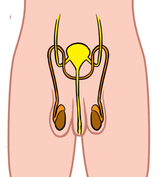</figure><p/>

<p>Die vroulike voortplantingsorgane sluit in die <strong>vagina</strong>, <strong>uterus</strong>, twee <strong>buise van Fallopius</strong> (<strong>ovidukte</strong>) en twee ovaria.</p>
<ul data-class="ListBulleted"><li>By die vrou word die uterus groter en die uterusvoering verdik.</li>
<li>By geboorte dra 'n dogtertjie reeds miljoene ova (eierselle) in twee organe wat die ovaria (eierstokke) genoem word. Gedurende puberteit begin die ovaria geslagsryp word en stel dan elke maand een ovum vry. Dit word <strong>ovulasie</strong> genoem. </li>
<li>Twee buisies verbind die uterus met die ovaria - hulle word die buise van Fallopius of die ovidukte genoem.</li>
</ul><p/>

<p>Wanneer die vroulike geslagsorgane geslagsryp is, sal dit by die volwasse vrou soos in die volgende diagram lyk.</p>

<p/>
<figure id="gd-idm3820016">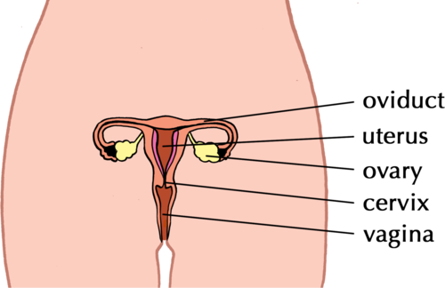</figure><p>Ons weet nou meer omtrent die manlike en vroulike voortplantingsorgane en hoe hierdie organe tydens puberteit geslagsryp word. Kom ons kyk nou na menslike voortplanting en die verskillende stadia daarvan.</p>

<p/></div><div class="section"><h3 class="title" id="toc-id-10">Verskillende stadia van menslike voortplanting.</h3><div class="note col-md-6" data-type="newwords"><ul data-class="ListBulleted"><li>konsepsie</li>
<li>ejakuleer</li>
<li>geslagsomgang</li>
<li>naelstring</li>
</ul></div>
<p/>

<p>Alhoewel jy nog nie gereed is vir die verantwoordlikheid om kinders te kry en hulle groot te maak nie, begin jou liggaam homself stadigaan tydens puberteit voorberei op voortplanting. Die hoofdoel van die menslike voortplantingorgane is om 'n volwasse sperm te produseer wat met 'n ovum kan versmelt om 'n nuwe menslike individu te skep.</p>
<div class="section"><h4 class="title">Ovulasie</h4>
<p>Een keer per maand sal een van die ovaria van die dogter of vrou se liggaam 'n volwasse ovum vrystel wat in die buis van Fallopius (ovidukt) inbeweeg. Hiervandaan beweeg dit na die uterus. Terselfdertyd word die uterusvoering voorberei op die moontlike inplanting van 'n bevrugte ovum deurdat die wand met baie bloedvate verdik.</p>

<p/></div><div class="section"><h4 class="title">Bevrugting en swangerskap</h4>
<p>Voordat 'n baba in die moeder se uterus kan ontwikkel, moet die ovum eers bevrug word. Die man <strong>ejakuleer</strong> (stel vry) miljoene sperma in die vrou se vagina tydens <strong>geslagsomgang</strong>. Vanaf die vagina moet die sperma swem, deur die uterus tot in die ovidukt en tot by die ovum.</p>

<p/>

<p>Die sperma bereik die ovum en slegs een van hulle dring die buitenste laag van die ovum binne. Die buitenste laag van die ovum word dan ondeurdringbaar sodat geen ander sperm kan binnedring nie. Hierdie oomblik wanneer die sperm en ovum versmelt word die oomblik van <strong>konsepsie</strong>, of <strong>bevrugting</strong>, genoem en dit lei na swangerskap, waartydens die baba ontwikkel.</p>

<p/>
<div class="note col-md-6" data-type="takenote">
<p>Jy is \(\text{100}\)% uniek - daar is nie nog een soos jy op Aarde nie.</p>
</div><figure>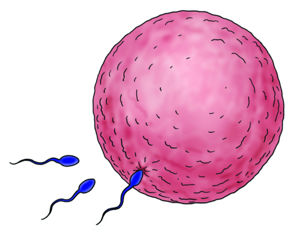<figcaption class="caption">Slegs een sperm sal die ovum bevrug. Die ander miljoene kan nie binnegaan nie.</figcaption></figure><p/>

<p>Nadat die ovum bevrug is, beweeg dit aan tot in die uterus. Sodra dit in die uterus aankom, sak dit in die dik uterusvoering in en heg stewig vas. Dit ontwikkel in 'n fetus en groei en ontwikkel. Die <strong>naelstring</strong> groei tussen die fetus en die uterus. 'n Plasenta vorm in die uteruswand om voedsel en suurstof na die ontwikkelende baba te bring en afvalstowwe te verwyder. Die voedsel en suurstof word vanaf die plasenta deur die naelstring na die ontwikkelende fetus geneem.</p>

<p/>
<figure>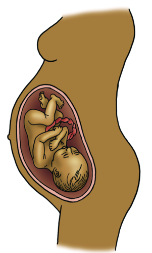<figcaption class="caption">'n Baba wat in die moeder se uterus ontwikkel. Sien jy die naestring?</figcaption></figure><p/>
<div class="note col-md-6" data-type="takenote">
<p>As 'n verwagtende vrou dwelms en alkohol gebruik terwyl sy swanger is, beweeg hierdie skadelike stowwe deur die plasenta na die baba. Dit veroorsaak ernstige skade by die baba. As voorbeeld, as 'n swanger vrou alkohol gebruik, kan die baba Fetale Alkohol Sindroom (FAS) ontwikkel.</p>
</div>
<p/>

<p>Aan die einde van swangerskap gee die moeder deur die vagina geboorte aan die baba. Soms is daar komplikasies en dan doen die dokter 'n keisersnit. Dit is 'n sjirurgiese prosedure wanneer 'n snit in die moeder se buik gemaak word om die baba uit te haal.</p>

<p/>

<p>Ons het nou gesien dat die ovum bevrug word na geslagsomgang en dan word die vrou swanger. Maar wat gebeur met die ovum as dit nie bevrug word nie?</p></div><div class="section"><h4 class="title">Menstruasie</h4>
<p>Na ovulasie, as die ovum nie in die ovidukt met 'n sperm versmelt om bevrug te word nie, dan beweeg die ovum nog steeds tot in die uterus. In plaas daarvan dat dit in die uteruswand ingeplant word, word die onbevrugte ovum nou deur die vagina uitgewerp, saam met die dik bloedvatryke uterusvoering wat ter voorbereiding op swangerskap gevorm is. Hierdie uitwerping word menstruasie genoem.</p>

<p/>

<p>Weet jy wat 'n mite is? 'n Mite is 'n storie wat  dalk mag waar wees, maar dalk nie. Mites is dikwels ou verhale wat van een geslag na die volgende oorgedra word. Dikwels word mites vertel en dan glo mense die stories sonder dat daar enige bewyse is dat dit werklik waar is.</p>

<p/>

<p>Een so'n Griekse mite vertel van 'n dame met die naam van Medusa. Haar hare was van regte slange gemaak en sy kon enigiemand in klip verander as hulle direk na haar gekyk het. Een dag toe het Perseus met haar baklei en het toe die slim plan gehad om sy skild soos 'n spie&#235;l te gebruik om na haar te kyk. Hy was daarom beskerm teen haar dodelike blik en kon haar kop afkap.</p>

<p/>
<figure>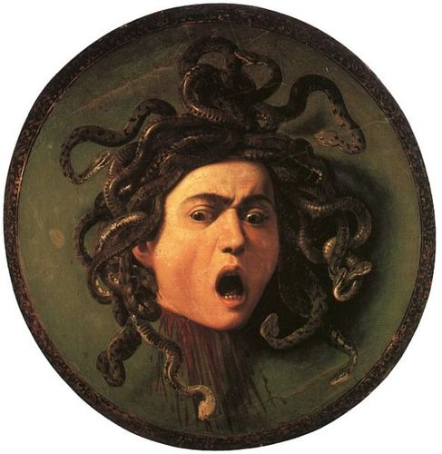<figcaption class="caption">Glo jy die mite omtrent Medusa?</figcaption></figure><p/>

<p>Daar is baie mites omtrent menstruasie en seks wat deur mense in ons gemeenskappe vertel word. Baie daarvan is nie die waarheid nie. Noudat jy meer omtrent geslagtelike voortplanting weet, kan jy self besluit of hierdie mites waar is of nie. Kom ons bespreek dit in meer detail.</p>

<p/>
<div class="activity" data-type="Activity"><h1 class="title">Maak 'n opname</h1><div class="teachers-guide">
<p>Hierdie behoort as 'n tuiswerktaak gedoen te word ter voorbereiding op die les omtrent menstruasie. Die vrae kan dan in die klas bespreek en beantwoord word.</p>
</div>
<p/>

<p><strong>INSTRUKSIES:</strong></p>
<ol data-class="ListEnumerated"><li>Lees 'n paar van die volende opmerkings wat mense oor menstruasie en seks gemaak het.</li>
<li>Lees die volgende vir ten minste vyf verskillende lede van jou familie of vriende.</li>
<li>Maak 'n kruisie om aan te dui of die persoon dink dit is waar of onwaar.</li>
</ol><p/>
<table><tr><td><p><strong>Mite</strong></p></td><td><p><strong>Reaksies (waar of onwaar)</strong></p></td></tr><tr><td><p>"Vroue wat menstrueer is vuil en onrein."</p></td><td><p/></td></tr><tr><td><p>"Tydens menstruasie moet 'n mens nooit koue kos eet of met kaal voete loop nie. As jy koud kry sal jou menstruasiepyne erger word."</p></td><td><p/></td></tr><tr><td><p>"Oefening is sleg vir 'n mens as jy menstrueer."</p></td><td><p/></td></tr><tr><td><p>"Moet nooit swem solank jy menstrueer nie."</p></td><td><p/></td></tr><tr><td><p>"Maagde behoort nie tampons te gebruik nie - hul sal hul maagdelikheid verloor."</p></td><td><p/></td></tr><tr><td><p>"Dit is ongesond om geslagsomgang te h&#234; tydens menstruasie."</p></td><td><p/></td></tr><tr><td><p>"Jy kan nie swanger word tydens menstruasie nie."</p></td><td><p/></td></tr><tr><td><p>"Jy kan nie swanger word of iemand swanger maak as geslagsomgang in water plaasvind nie."</p></td><td><p/></td></tr><tr><td><p>"Vroue is altyd moeilik en irrasioneel tydens menstruasie."</p></td><td><p/></td></tr><tr><td><p>"Om te drink en dwelms te drink maak geslagsomgang meer pret."</p></td><td><p/></td></tr><tr><td><p>"As jy stort na seks, sal jy nie swanger word nie."</p></td><td><p/></td></tr><tr><td><p>"Jy kan nie swanger word as dit jou eerste keer is nie."</p></td><td><p/></td></tr><tr><td><p>"Almal het geslagsomgang."</p></td><td><p/></td></tr></table><p/>
<div class="note col-md-6" data-type="takenote">
<p>'n Maagd is iemand wat nog nie geslagsomgang gehad het nie.</p>
</div>
<p/>

<p><strong>VRAE EN BESPREKING:</strong></p>

<p/>
<div class="exercises"><div class="problemset"><div class="entry"><div class="problem">
<p>Hoeveel mense in die tuiswerk-opname het geglo dat die opmerkings waar is?</p>

                        <table><tr><td><p>Die meeste mense het gelo dat dit waar is.</p></td><td><p>Omtrent die helfte het geglo dit is waar en die ander helfte het gedink dit is onwaar.</p></td><td><p>Niemand het geglo dat dit waar is nie.</p></td></tr><tr><td><p/></td><td><p/></td><td><p/></td></tr></table></div><div class="solution">
<p/>
</div></div><div class="entry"><div class="problem">
<p>Bespreek met die klas watter van die opmerkings deur die meeste mense as waar beskou is. Maak aantekeninge op die volgende lyne. </p><hr/><hr/><hr/><hr/></div><div class="solution">
<p/><p>Leerder-afhanklike antwoord</p>
</div></div><div class="entry"><div class="problem">
<p>Watter van die opmerkings het die sterkste reaksie uitgelok onder die mense wat jy ondervra het? (Positiewe of negatiewe reaksie). Bespreek hierdie reaksies met die klas.  Maak aantekeninge op die volgende lyne.  </p><hr/><hr/><hr/><hr/></div><div class="solution">
<p/><p>Leerder-afhanklike antwoord</p>
</div></div><div class="entry"><div class="problem">
<p>Het enigiemand oor die opmerkings gelag? Wie? Weet jy waarom hulle gelag het? Deel dit met die klas. </p><hr/><hr/></div><div class="solution">
<p/><p>Leerder-afhanklike antwoord</p>
</div></div><div class="entry"><div class="problem">
<p>Watter van die stellings dink jy is waar? Bespreek dit met die klas en maak aantekeninge op die volgende lyne. </p><hr/><hr/><hr/><hr/></div><div class="solution">
<p/><p>Leerder-afhanklike antwoord</p>
</div></div></div></div>

<p/>
<div class="teachers-guide">
<p>U behoort deur al hierdie mites met die klas te gaan en daarop te wys dat dit almal mites is wat NIE waar is nie. Lees deur die verduidelikings en bespreek dit met die klas.</p>

<p><strong>"Vroue wat menstrueer is vuil en onrein."</strong></p>
<ul data-class="ListBulleted"><li>Vroue is nie vuil en onrein tydens menstruasie nie want dit is 'n natuurlike proses. Sommige mense glo dit om geloofsredes en alhoewel u daarvoor sensitief moet wees, bly dit 'n feit dat vroue nie dan vuil is nie.</li>
</ul><p><strong>"Tydens menstruasie moet 'n mens nooit koue kos eet of met kaal voete loop nie. As jy koud kry sal jou menstruasiepyne erger word."</strong></p>
<ul data-class="ListBulleted"><li>Dit is onwaar. Die uterus is die orgaan wat menstruasie beheer en koue voete of koue kos het niks met die uterus te doen nie.</li>
</ul><p><strong>"Oefening is sleg vir 'n mens as jy menstrueer."</strong></p>
<ul data-class="ListBulleted"><li>Menstruasie is 'n normale, natuurlike funksie van die liggaam en nie 'n gebrek nie. Die vrou kan voortgaan met haar lewe asof niks buitengewoons aan die gang is nie.</li>
</ul><p><strong>"Moet nooit swem solank jy menstrueer nie."</strong></p>
<ul data-class="ListBulleted"><li>Alhoewel die korrekte beskerming (tampons) noodsaaklik is, is daar geen rede waarom dogters nie kan swem tydens menstruasie nie.</li>
</ul><p><strong>"Maagde behoort nie tampons te gebruik nie - hul sal hul maagdelikheid verloor."</strong></p>
<ul data-class="ListBulleted"><li>Maagdelikheid handel daaroor of 'n vrou reeds geslagsomgang gehad het of nie. Dit was so dat vroue se maagdelikheid in die verlede gemeet is aan die teenwoordigheid van die maagdevlies omdat dit tydens geslagsomgang geskeur word. Die maagdevlies kan egter deesdae op soveel maniere geskeur word, soos deur 'n tampon te gebruik, perd te ry, gimnastiek of ballet te doen. Dit beteken nie dat sy haar maagdelikheid verloor het nie.</li>
</ul><p><strong>"Dit is ongesond om geslagsomgang te h&#234; tydens menstruasie."</strong></p>
<ul data-class="ListBulleted"><li>Alhoewel nie almal daarvan hou nie, is daar geen mediese redes waarom geslagomgang tydens menstruasie nie kan plaasvind nie. Dit is die persoonlike keuse van die betrokke paartjie.</li>
</ul><p/>
</div><div class="teachers-guide">
<p/>

<p><strong>"Jy kan nie swanger word tydens menstruasie nie."</strong></p>
<ul data-class="ListBulleted"><li>Daar is steeds 'n kans dat jy swanger kan word tydens menstruasie. Die sperma kan vir 'n hele paar dae in die vagina bly lewe. Dit beteken dat jy daarn&#225; kan ovuleer en nog steeds swanger word.</li>
</ul><p><strong>"Jy kan nie swanger word of iemand swanger maak as geslagsomgang in water plaasvind nie."</strong></p>
<ul data-class="ListBulleted"><li>Onwaar. Water verhoed op geen manier swangerskap of die oordrag van SOS's  nie.</li>
</ul><p><strong>"Vroue is altyd moeilik en irrasioneel tydens menstruasie."</strong></p>
<ul data-class="ListBulleted"><li>Baie vroue (nie almal nie) ondervind pre-menstruele-sindroom-simptome, wat emosionele veranderings veroorsaak, maar dit is nie altyd die geval nie en 'n vrou se emosionele toestand kan nie outomaties aan PMS toegeskryf word nie. Tienerseuns kan maar net so buierig en bakleierig raak!</li>
</ul><p><strong>"Om te drink en dwelms te drink maak geslagsomgang meer pret."</strong></p>
<ul data-class="ListBulleted"><li>As jy dronk is, of dwelmmiddels gebruik, is dit moeilik om verstandige besluite te neem oor seks. \(\text{20}\)% van 15 tot 17 jariges s&#234; hulle het al iets seksueel gedoen terwyl hulle alkohol of dwelmmiddels gebruik het, iets wat hulle nie sou gedoen het as hulle nugter was nie. Dit mag dalk op daardie oomblik soos pret of 'n goeie idee lyk, maar dit beteken ook dat jy minder geneig is om veilige seks te beoefen. Jy kan dan swanger raak of 'n SOS kry. Om onder die invloed van dwelmmiddels of alkohol te wees maak meisies ook meer kwesbaar om ongewenste toenadering te ontvang. </li>
</ul><p><strong>"As jy stort na seks, sal jy nie swanger word nie."</strong></p>
<ul data-class="ListBulleted"><li>Dit is nie waar nie. Die water sal nie die sperm afwas nie. Die sperm het reeds die vagina binnegekom. Soos met SOS's sal stort na seks nie swangerskap voorkom nie, ook nie die oordrag van SOS's nie.   </li>
</ul><p><strong>"Jy kan nie swanger word as dit jou eerste keer is nie."</strong></p>
<ul data-class="ListBulleted"><li>As jy ovuleer maak dit nie saak dat dit die eerste keer is dat jy seks het nie, jy kan nog steeds swanger word. As jou liggaam 'n ovum geproduseer het tydens ovulasie is daar geen rede waarom sperm nie die ovum sal bevrug nie. Jy kan nog steeds swanger word al is dit die eerste keer wat jy seks het. </li>
</ul><p/>
</div><div class="teachers-guide">
<p/>

<p><strong>"Almal het geslagsomgang."</strong></p>
<ul data-class="ListBulleted"><li>Vir leerders mag dit dalk lyk asof almal seks het, maar in werklikheid het minder as die helfte (\(\text{48}\)%) van alle ho&#235;rskool-leerders al ooit seks gehad. Wys vir die leerders daarop dat mense gereeld jok en oordryf wanneer dit by seks kom. Maar wys ook daarop dat dit nie saak maak wat ander doen nie, en wie die waarheid vertel of nie, dit maak net saak wat die beste vir jou is. Maats mag druk op jou uitoefen deur dinge te s&#234; soos "As jy my liefhet sal jy". Maar 'n waarlik liefdevolle en toegewyde maat sal wag totdat jy gereed is.  </li>
</ul><p/>

<p>Aan die einde van hierdie les moet u 'n punt daarvan maak om neerhalende woorde, wat gebruik word om na vrouens en mans te verwys, te bespreek. Dit kan moontlik nuttig wees om slegte naamkeuses te dinkskrum, en om die gebruik van korrekte terminologie te bespreek sodat hierdie slegte name vermy kan word.</p>

<p/>

<p>As daar verskillende kulturele en geloofsgroepe in die klas is, kan dit die aangewese tyd wees om geloofswette en sieninge oor menstruasie te bespreek. Bespreek ook wat meisies in die klas ervaar as deel van hierdie groep. Maar onderwysers moet versigtig wees om nie meisies te verneder of in verleentheid te stel wat optree in ooreenstemming met die godsdienstige oortuiging van hulle families nie. Onderwysers moet eerder 'n oop omgee-ruimte skep waar leerders hierdie onderwerpe kan bespreek.</p>
</div>
<p/>
</div></div></div><div class="section"><h3 class="title" id="toc-id-11">Maniere om swangerskap en SOS's te voorkom</h3>
<p/>

<p>Soos wat ons hierbo bespreek het, berei jou liggaam homself tydens puberteit voor om te kan voortplant. Maar jy is in beheer van jou liggaam en net jy kan die besluit maak wanneer jy gereed is om 'n ouer te word en swanger te word.</p>

<p/>

<p>As jy besluit om seksueel aktief te word, is dit belangrik om versigtig te dink aan die twee risiko's wat betrokke is daarby:</p>
<ol data-class="ListEnumerated"><li>Swangerskap</li>
<li>Om besmet te word met 'n Seksueel Oordraagbare Siekte (SOS's) soos MIV/VIGS, Herpes of Sifilis. </li>
</ol><div class="teachers-guide">
<p>Tieners sal moontlik banger weer vir 'n moontlike swangerskap as om 'n SOS te kry. Dit is 'n hartseer feit omdat party SOS's ongeneeslik en lewensgevaarlik is. Dit is nuttig om vir leerders in hierdie hoofstuk daarop te wys dat hormonale voorbehoedpille NIE teen SOS's beskerm NIE. 'n Fout wat begaan is wanneer hulle nog jonk is, kan die res van hulle lewens be&#239;nvloed.</p>
</div>
<p>Daar is verskillende maniere om swangerskap te voorkom.</p>
<div class="section"><h4 class="title">Voorbehoedmiddels </h4>
<p>Om swangerskap te vermy kan jy <strong>voorbehoedmiddels</strong> gebruik. Daar is verskillende voorbehoedmiddels wat deesdae beskikbaar is. Hulle voorkom dat die sperm die ovum bereik en voorkom dus dat bevrugting plaasvind. Andersins kan hulle voorkom dat die bevrugte ovum inplanteer in die wand van die uterus.</p>

<p/>
<div class="note col-md-6" data-type="takenote">
<p>'kontra-" beteken teen, daarom beteken kontrasepsie teen-konsepsie.</p>
</div>
<p/>

<p><strong>Manlike kondome</strong> is rubberagtige skedes wat oor 'n man se stywe penis geplaas word voor seks, en gedra word tydens geslagsgemeenskap om te voorkom dat sperma die vrou se vagina binnegaan. Kondome help ook om die verspreiding van SOS's te voorkom.</p>
<figure id="gd-idm7168592">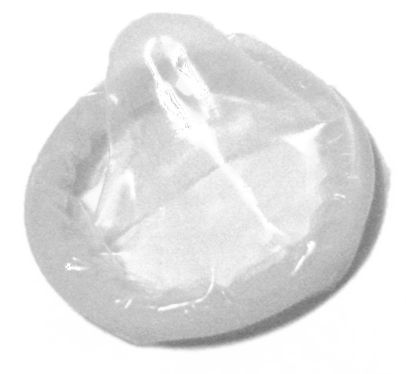</figure><p><strong>Vroulike kondome </strong> verhoed ook dat die sperma die ovum bereik. Maar hierdie word in die vrou se vagina geplaas om op te tree as versperring teen die sperm, en dit word minder algemeen gebruik.</p>

<p/>

<p><strong>Voorbehoedpille</strong> word vandag deur baie vroue gebruik. Baie hiervan voorkom ovulasie. Pille moet elke dag op dieselfde tyd geneem word anders is dit nie effektief nie. As die vrou 'n infeksie het met 'n ho&#235; koors, of op antibiotika is, kan dit ook die pil se doeltreffendheid verminder. Terwyl die pil uitstekend is om swangerskap te voorkom, bied dit GEEN beskerming teen SOS's nie.</p>
<figure id="gd-idp14682864">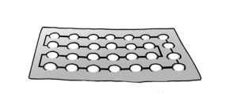</figure><p/></div><div class="section"><h4 class="title">Seksueel Oordraagbare Siektes (SOS's)</h4>
<p>Daar is verskeie gevaarlike en skadelike siektes wat van een persoon na 'n ander een oorgedra word tydens geslagsgemeenskap. Sommige hiervan is lewensgevaarlik, soos die Menslike Immuniteitsgebrek Virus (MIV). Ander veroorsaak baie pynlike en langtermyn simptome.</p>

<p/>

<p>Jy kan voorkom dat jy besmet word met 'n SOS deur die volgende te doen:</p>
<ul data-class="ListBulleted"><li>Kry die feite: Maak seker jy ken die nuutste inligting oor SOS's, hoe hulle versprei word, hulle simptome en hoe jy jouself kan beskerm tydens geslagsgemeenskap. </li>
<li>Neem beheer van jou sekslewe: Hoe meer seksmaats jy het, hoe ho&#235;r is jou risiko om 'n SOS te kry. </li>
<li>Wees getrou: As jy of jou maat seks het met iemand anders loop jy die risiko om die ander persoon met die SOS te besmet.</li>
<li>Om kondome te gebruik verminder jou kanse om SOS's te kry aansienlik. </li>
</ul><div class="teachers-guide">
<p>U mag dalk vir leerders daarop wil wys dat wanneer jy geslagsgemeenskap met 'n maat het,  jy jouself in gevaar stel om 'n siekte van hulle te kry. SOS's word van persoon tot persoon oorgedra tydens geslagsgemeenskap. Jy kan ook die siekte van ENIGE van hulle vorige seksmaats kry, wat op hulle beurt 'n SOS kon gekry het by enige van hulle seksmaats, ens.</p>
</div>
<p>Dit is jou besluit of jy geslagsgemeenskap met 'n romantiese maat wil h&#234; of nie. Daar is twee baie belangrike punte om hier te onthou:</p>

<p/>
<ol data-class="ListEnumerated"><li>Niemand, maak nie saak wie dit is nie, het die reg om jou te forseer om met hulle, of met enigiemand anders, seks te h&#234; nie. Jy is dus die enigste een wat toegelaat word om te besluit of jy gereed is om 'n seksuele verhouding te h&#234; of nie. </li>
</ol><div class="teachers-guide">
<p>Beklemtoon aan leerders dat as iemand jou forseer om met hulle seks te h&#234; of jou op enige manier dreig om met iemand anders seks te h&#234;, jy die reg het om nee te s&#234;. Ons land se grondwet beskerm jou reg om nee te s&#234;. As dit met jou gebeur, gaan gesels met iemand wat jy kan vertrou en vra hulle om jou te help om die probleem op te los.</p>
</div><ol data-class="ListEnumerated"><li>As jy besluit om seks te h&#234;, moet jy dit op 'n verantwoordelike wyse doen. Dit sluit in om jouself teen moontlike swangerskap en enige SOS-infeksie te beskerm.  </li>
</ol><div class="teachers-guide">
<p>Beklemtoon vir leerders dat wanneer jy besluit om seks met iemand te h&#234;, jy met 'n mediese professionele persoon kan gaan gesels, soos die suster by die plaaslike kliniek of die professionele gesondheidsorg-persoon wat by die apteek werk. Hulle sal jou help om die korrekte voorbehoedmiddels en beskerming wat jy nodig het, te kry. Beklemtoon dat dit nie net seuns is wat kondome saam met hulle kan dra nie. Meisies kan ook kondome saam met hulle dra. As meisies kondome beskikbaar het, kan hulle DAAROP AANDRING dat beskerming gebruik word.</p>
</div>
<p/>
<div class="note col-md-6" data-type="takenote">
<p>As jy 'n slagoffer was van seksuele mishandeling kan jy leiding en hulp kry deur Lifeline te kontak by 0800 150 150. Die Lifeline webwerf vir slagoffers van seksuele misdrywe kan gevind word by <a data-class="ExternalLink" href="http://www.lifeline.co.za/need-support/rape/">http://www.lifeline.co.za/need-support/rape/</a>.</p>
</div>
<p/>
<div class="activity" data-type="Activity"><h1 class="title">Skryf 'n brief</h1><div class="teachers-guide">
<p>Hierdie aktiwiteit is ontwerp om leerders te bemagtig om beheer te neem oor hulle eie seksuele gesondheid. Dit is dus 'n baie persoonlike aktiwiteit en moet nie gebruik word vir assesseringsdoeleindes nie. Leerders kan kies om hulle briewe heeltemal privaat te hou.</p>
</div>
<p>Dikwels maak ons beloftes aan ander mense, en werk baie hard om hulle na te kom. Maar wanneer ons beloftes aan onsself maak, hou ons nie daardie beloftes nie.</p>

<p/>

<p>Skryf 'n brief aan jouself waarin jy verduidelik wat jy wil doen in terme van seksuele aktiwiteit. Wil jy betrokke raak in seks of wil jy wag totdat jy ouer is? Verduidelik waarom jy hierdie besluit geneem het.</p>

<p/>

<p>Voeg dan by jou brief die belofte dat jy jouself sal beskerm daarteen om 'n SOS te kry of swanger te raak voordat jy gereed is om 'n ouer te word. Verduidelik hoe jy jouself verantwoordelike keuses sien maak aangaande seks.</p>

<p/>

<p>Plaas jou brief op 'n veilige plek waar jy dit gereeld kan sien om jouself te herinner van die belofte aan jouself. Onthou dit is 'n private brief en jy kan kies of jy dit aan enigiemand anders wil wys of nie.</p>

<p/>
</div></div></div></div><div class="section"><h2 class="title" id="toc-id-12">Opsomming</h2><div class="note col-md-10" data-type="keyconcepts"><ul data-class="ListBulleted"><li>Geslagtelike voortplanting vind plaas wanneer 'n sperm en 'n ovum (eiersel) van twee mense kombineer om nakomelinge te produseer wat dieselfde eienskappe het, maar nie identies aan die ouers is nie. </li>
<li>By angiosperm-plante word sade in blomme geproduseer.</li>
<li>Die manlike strukture van blomme is die helmknoppe en helmdrade, wat gesamentlik die meeldrade vorm. </li>
<li>Die vroulike strukture van 'n blom is die stempel, styl en vrugbeginsel, wat gesamentlik die vrugblaar vorm.</li>
<li>Bestuiwing vind plaas wanneer stuifmeel oorgedra word van die helmknop van een blom, na die stempel van 'n ander blom van dieselfde spesie.</li>
<li>Bestuiwing word aangehelp deur diere (bestuiwers), die wind en/of water. </li>
<li>Bestuiwers speel 'n belangrike rol in die produksie van landbou-gewasse vir mense. </li>
<li>Die stuifmeel groei 'n stuifmeelbuis in die styl af om die stuifmeelkern na die saadknoppe in die vrugbeginsel te neem. </li>
<li>Die bevrugte saadknoppe word sade en die vrugbeginsel kan swel om 'n vrug te vorm. </li>
<li>Sade word op verskeie maniere versprei deur diere, die wind, water en plof-krag. </li>
<li>By mense is die hoofdoel van voortplanting dat  die sperm en ovum kan versmelt en dan te ontwikkel tot 'n baba tydens swangerskap. </li>
<li>Puberteit is die stadium in die menslike lewensiklus wanneer geslagsorgane volwasse word as voorbereiding op voortplanting. </li>
<li>Tydens puberteit ervaar seuns en dogters fisiese en emosionele veranderinge. </li>
<li>Die manlike voortplantingsorgane sluit in die penis, en testes wat sperm produseer.</li>
<li>Die vroulike voortplantingsorgane sluit die vagina, uterus, ovidukte en ovaria in. </li>
<li>Die ovaria produseer een volwasse ovum (eiersel) elke maand tydens ovulasie. Die ovum beweeg dan deur die ovidukt.</li>
<li>As geslagsgemeenskap plaasvind beweeg die sperm na die ovum toe. Een sperm sal met die ovum versmelt tydens die proses van bevrugting. </li>
<li>Die bevrugte ovum beweeg na die uterus toe, en inplanteer in die voering van die uterus. Daar groei dit vir ongeveer 9 maande voordat die baba gebore word. </li>
<li>As bevrugting nie plaasvind nie, beweeg die ovum na die uterus vanwaar dit uitgewerp word deur die vagina. Die uterus se voering breek af en word deur die vagina uitgewerp tydens menstruasie. </li>
<li>Swangerskap en SOS's kan meestal verhoed word deur 'n manlike kondoom te gebruik. </li>
</ul></div>
<p/>

<p><strong>Konsepkaart</strong></p>

<p/>

<p>Bestudeer die konsepkaart hieronder. Maak dit vir jou sin? Begin jy verstaan wat konsepkaarte doen? Om die konsepkaart te voltooi, vul die oop spasie hieronder in. Kyk na die konsep waaraan dit verbind is om die antwoord te vind: "In mense word bevrugting voorkom deur ........"</p>

<p/>
<figure id="gd-idp4035408">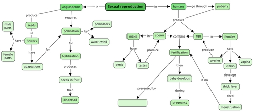</figure><div class="teachers-guide">
<p>Onderwysersweergawe</p>
<figure id="gd-idp2899408">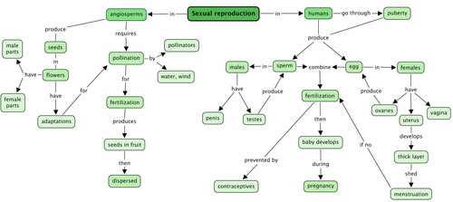</figure><p/>
</div></div><div class="activity" data-type="Revision"><h1 class="title">Hersieningsvrae</h1>
<p/>
<div class="exercises"><div class="problemset"><div class="entry"><div class="problem">
<p>Bestudeer die volgende diagram van 'n blom en die dele wat betrokke is by voortplanting. Verskaf byskrifte vir nommers 1-12. [12 punte]</p>

                <figure id="gd-idp1339360">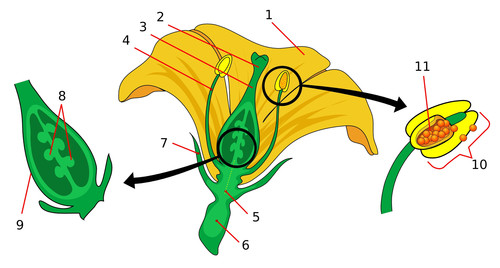</figure><table><tr><td><p>1:</p></td><td><p>7:</p></td></tr><tr><td><p>2:</p></td><td><p>8:</p></td></tr><tr><td><p>3:</p></td><td><p>9:</p></td></tr><tr><td><p>4:</p></td><td><p>10:</p></td></tr><tr><td><p>5:</p></td><td><p>11:</p></td></tr><tr><td><p>6:</p></td><td><p>4 en 10:</p></td></tr></table></div><div class="solution">
<p/><table><tr><td><p>1: kroonblaar</p></td><td><p>7: kelkblaar</p></td></tr><tr><td><p>2: stempel</p></td><td><p>8: saadknop</p></td></tr><tr><td><p>3: styl</p></td><td><p>9: vrugbeginsel</p></td></tr><tr><td><p>4: helmdraad</p></td><td><p>10: helmknop</p></td></tr><tr><td><p>5: blombodem</p></td><td><p>11: stuifmeelkorrel</p></td></tr><tr><td><p>6: blomsteel</p></td><td><p>4 + 10: meeldraad</p></td></tr></table></div></div><div class="entry"><div class="problem">
<p>Beskryf die funksie van die volgende strukture: [5 punte]</p>

            
<p/>

        <table><tr><td><p><strong>Struktuur</strong></p></td><td><p><strong>Funksie</strong></p></td></tr><tr><td><p>kroonblare</p></td><td><p/></td></tr><tr><td><p>saadknoppe</p></td><td><p/></td></tr><tr><td><p>stuifmeelkorrels</p></td><td><p/></td></tr><tr><td><p>helmdraad</p></td><td><p/></td></tr><tr><td><p>blombodem</p></td><td><p/></td></tr></table></div><div class="solution">
<p/><p/>

        <table><tr><td><p><strong>Struktuur</strong></p></td><td><p><strong>Funksie</strong></p></td></tr><tr><td><p>kroonblare</p></td><td><p>helder gekleurde struktuur wat bestuiwers aanlok</p></td></tr><tr><td><p>saadknoppe</p></td><td><p>die deel van die vrugbeginsel van die blom wat die ovum bevat en wat ontwikkel in die saad na bevrugting</p></td></tr><tr><td><p>stuifmeelkorrels</p></td><td><p>fyn poeieragtige stof wat die manlike geslagselle bevat en wat na die stempel toe vervoer word. Dit groei in die styl af, na die saadknoppe toe, waar bevrugting plaasvind.</p></td></tr><tr><td><p>helmdraad</p></td><td><p>steel-agtige struktuur van die meeldraad wat die helmknop dra en ondersteun</p></td></tr><tr><td><p>blombodem</p></td><td><p>boonste gedeelte van die blomsteel waaraan al die ander dele van die blom heg</p></td></tr></table></div></div><div class="entry"><div class="problem">
<p>Kyk na die volgende prentjie van 'n vlermuis wat besig is om nektar uit die blom te drink. Hoe is hierdie blom aangepas vir bestuiwing deur die vlermuis? [3 punte]</p>

           <figure><figcaption class="caption">'n Vlermuis wat nektar drink<a href="http://www.flickr.com/photos/krossbow/3155074642/"> http://www.flickr.com/photos/krossbow/3155074642/ </a></figcaption></figure><p/><hr/><hr/><hr/></div><div class="solution">
<p/><p>Sommige punte waarop leerders kan let is: Die blom is helder gekleurd en gee moontlik 'n soet reuk af om die vlermuis aan te trek. Die blom het nektar wat die vlermuis kan drink, dis hoekom die vlermuis na die blom toe kom. Die blom is waarskynlik reeds oop in die aand omdat die vlermuis naglewend is. Die blom het 'n soortgelyke vorm as die vlermuis se kop, sodat die vlermuis maklik sy kop in die blom kan inpas om by die nektar uit te kom. Maar die blom is nog steeds groot genoeg dat die nektar onder in die blom is, sodat die vlermuis sy hele kop daarin moet druk. Dus sal hy teen die stuifmeel skuur. Die meeldrade is lank en het veeragtige punte wat teen die vlermuis skuur soos wat hy sy kop in die blom indruk. Dit verseker dat stuifmeel afborsel teen die vlermuis soos wat hy sy kop insteek. Die stuifmeel kan dan oorgedra word na 'n ander blom wanneer die vlermuis daardie blom besoek.</p>
</div></div><div class="entry"><div class="problem">
<p>Kyk na die volgende prentjie van 'n saad. Hoe dink jy word hierdie saad versprei? Hoe is die saad aangepas vir hierdie soort verspreiding? [3 punte]</p>

           <figure>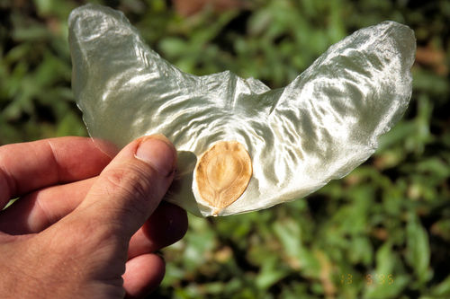<figcaption class="caption">'n Saad. <a href="http://commons.wikimedia.org/wiki/File:Alsomitra_macrocarpa_seed_%28syn._Zanonia_macrocarpa%29.jpg"> http://commons.wikimedia.org/wiki/File:Alsomitra_macrocarpa_seed_%28syn._Zanonia_macrocarpa%29.jpg </a></figcaption></figure><p/><hr/><hr/><hr/></div><div class="solution">
<p/><p>Die saad word versprei deur wind. Leerders kan die volgende aanpassings uitwys: Hierdie saad is groot, maar dit is baie lig omdat die vlerkies  baie dun is, dus kan dit deur wind versprei te word. Die saad het vlerkies  wat dit kan help om deur die lug te beweeg soos 'n helikopter. Dit help dit om na 'n plek te beweeg wat weg van die ouer-boom is sodat dit &#234;rens anders kan groei en nie met die ouer-boom hoef mee te ding vir spasie, water, ens. nie. Dit help ook dat dit opgelig kan word deur 'n windvlaag. As dit net die klein, middelste bruin saad was, sonder die vlerkies, sou dit net direk van die boom/plant afgeval het.</p>
</div></div><div class="entry"><div class="problem">
<p>'n Gr. 7 leerder het probeer om die proses van die menslike voortplantingsiklus te verduidelik, maar het die volgorde van die siklus deurmekaar gemaak. Skryf nommers 1 - 6 langs die sinne hieronder om dit in die korrekte volgorde te plaas. [3 punte]</p>

        
<p>_______ Die sperma kom die ovidukt binne.</p>

        
<p>_______ Tydens geslagsgemeenskap word sperma uit die penis vrygestel.</p>

        
<p>_______ Een sperm dring deur die buitelaag van die ovum om dit te bevrug.</p>

        
<p>_______ Die bevrugte ovum word in die voering van die uterus ingeplant.</p>

        
<p>_______ Die sperm beweeg van die vagina af, deur die uterus na die ovidukt toe.</p>

        
<p>_______ Die ovum word vrygestel uit die ovarium en beweeg deur die ovidukt.</p>

       </div><div class="solution">
<p/><p/>

        
<p><u>4</u> Die sperm kom die ovidukt binne.</p>

        
<p><u>2 of 1</u> Tydens geslagsgemeenskap word die sperm uit die penis vrygestel.</p>

        
<p><u>5</u> Een sperm kom die buitelaag van die ovum binne om dit te bevrug.</p>

        
<p><u>6</u> Die bevrugte ovum word in die voering van die uterus ingeplant.</p>

        
<p><u>3</u> Die sperm beweeg van die vagina af, deur die uterus tot in die ovidukt in.</p>

        
<p><u>1 of 2</u> Die eiersel word uit die ovaria vrygestel en beweeg langs die ovidukt af.</p>

        
<p/>
</div></div><div class="entry"><div class="problem">
<p>Verduidelik die verskil tussen ovulasie en menstruasie. [2 punte] </p><hr/><hr/></div><div class="solution">
<p/><p>Ovulasie: wanneer die ovarium 'n ryp ovum vrystel in die buis van Fallopius.</p>

        
<p>Menstruasie: wanneer die bloedvatryke voering van die uterus en die onbevrugte ovum deur die vagina uitgewerp word.</p>
</div></div><div class="entry"><div class="problem">
<p>Waar word 'n eiersel ge&#239;nplanteer of aangeheg wanneer dit bevrug is? [1 punt] </p><hr/></div><div class="solution">
<p/><p>In die bloedvatryke voering van die uterus.</p>
</div></div><div class="entry"><div class="problem">
<p>Die voortplantingsorgane word op 'n baie spesifieke manier gestruktureer om bevrugting en swangerskap moontlik te maak. Verduidelik die funksie van elkeen van hierdie strukture in die manlike en vroulike liggame. [12 punte]</p>

         <table><tr><td><p><strong>Voortplantingsorgane </strong></p></td><td><p><strong>Hulle funksie</strong></p></td></tr><tr><td><p>Ovaria</p></td><td><p/></td></tr><tr><td><p>Ovidukte</p></td><td><p/></td></tr><tr><td><p>Uterus</p></td><td><p/></td></tr><tr><td><p>Vagina</p></td><td><p/></td></tr><tr><td><p>Penis</p></td><td><p/></td></tr><tr><td><p>Testes</p></td><td><p/></td></tr></table></div><div class="solution">
<p/><p/>

        <table><tr><td><p><strong>Voortplantingsorgane </strong></p></td><td><p><strong>Hulle funksie</strong></p></td></tr><tr><td><p>Ovaria</p></td><td><p>Produseer die vroulike geslagshormone en bevat die ova, laat die ova groei en volwasse word en stel een ovum vry wanneer dit ryp is.</p></td></tr><tr><td><p>Ovidukte</p></td><td><p>Vervoer die ryp ovum vanaf die ovarium na die uterus; bevrugting vind plaas in die buise van Fallopius (ovidukte). Sperme swem van die uterus tot in die buis van Fallopius (ovidukt).</p></td></tr><tr><td><p>Uterus</p></td><td><p>Een keer per maand verdik die voering van die uterus en word bloedvatryk om die bevrugte ovum toe te laat om daarin te inplanteer sodat dit 'n naelstring en plasenta kan vorm. Die uterus ondergaan ook sterk sametrekkings tydens geboorte.</p></td></tr><tr><td><p>Vagina</p></td><td><p>Elastiese buis wat kan uitsit om die penis te akkommodeer; sperm swem vanaf die penis in die vagina in, na die uterus toe. Dit laat ook toe dat die bloedvatryke voering van die uterus een keer per maand tydens menstruasie uitgewerp word. Tydens geboorte vorm dit die geboortekanaal waardeur die baba beweeg om die moeder se liggaam te verlaat.</p></td></tr><tr><td><p>Penis</p></td><td><p>Kan regop staan (styf en hard word) om in die vagina geplaas te word; ejakuleer sperma in 'n vloeistof wat semen genoem word. Urine word ook via die uretra uitgeskei.</p></td></tr><tr><td><p>Testes</p></td><td><p>Produseer die manlike hormoon; produseer sperma wat deur die verskillende buise beweeg na die penis vanwaar dit ge&#235;jakuleer word.</p></td></tr></table><p/>
</div></div><div class="entry"><div class="problem">
<p>Tydens puberteit ontwikkel die penis en testes en word volwasse om hulle funksie in voortplanting te uitvoer. Verduidelik watter veranderinge vind plaas en waarom hierdie veranderinge noodsaaklik is. [2 punte] </p><hr/><hr/></div><div class="solution">
<p/><p>Die penis word langer en groter; dit begin ejakuleer in voorbereiding op voortplanting. Die testes word volwasse en begin sperma, wat 'n ovum kan bevrug, produseer.</p>
</div></div><div class="entry"><div class="problem">
<p>Verduidelik watter veranderinge vind plaas in die ovaria van 'n meisie tydens puberteit en waarom hierdie veranderinge belangrik vir voortplanting is. [2 punte] </p><hr/><hr/></div><div class="solution">
<p/><p>Tydens puberteit word die ovaria gestimuleer om te begin volwasse word en om ova op 'n maandelikse basis vry te stel. Die bevrugting van 'n volwasse ovum deur 'n spermsel word benodig voordat swangerskap kan plaasvind.</p>
</div></div><div class="entry"><div class="problem">
<p>'n Gr. 7 leerder is gevra om die terme puberteit, menstruasie, bevrugting, swangerskap en konsepsie te definieer. Begin deur te <strong>evalueer </strong> hoe goed hy elkeen van die terme gedefinieer het en <strong>maak reg of verbeter </strong> dan in elke geval die definisies. [10 punte]</p>

        <table><tr><td><p><strong>Term en definisie </strong></p></td><td><p><strong>Evaluering</strong></p></td><td><p><strong>Verbetering</strong></p></td></tr><tr><td><p><strong>Puberteit</strong>: wanneer jy groot word.</p></td><td><p/></td><td><p/></td></tr><tr><td><p><strong>Menstruasie</strong>: wanneer 'n meisie bloei.</p></td><td><p/></td><td><p/></td></tr><tr><td><p><strong>Bevrugting</strong>: wanneer jy goed in die tuin insit om dit beter te laat groei.</p></td><td><p/></td><td><p/></td></tr><tr><td><p><strong>Swangerskap</strong>: wanneer die ma se maag groei en die baba verskyn.</p></td><td><p/></td><td><p/></td></tr><tr><td><p><strong>Konsepsie </strong>: wanneer die baba begin lewendig word.</p></td><td><p/></td><td><p/></td></tr></table></div><div class="solution">
<p/><p/>

        <table><tr><td><p><strong>Term en definisie </strong></p></td><td><p><strong>Evaluering</strong></p></td><td><p><strong>Verbetering</strong></p></td></tr><tr><td><p><strong>Puberteit</strong>: wanneer jy groot word.</p></td><td><p>Vaag en nie akkuraat nie; jy groei van geboorte af tot volwassenheid.</p></td><td><p>Puberteit is die tyd tydens kinderjare wanneer die geslagsorgane volwasse word en die liggaam verskeie veranderinge ondergaan om dit voor te berei op voortplanting.</p></td></tr><tr><td><p><strong>Menstruasie</strong>: wanneer 'n meisie bloei.</p></td><td><p>Vaag, onakkuraat - wanneer 'n meisie haarself sny of beseer kan sy ook bloei, maar nie bloei soos wat hier na verwys word nie.</p></td><td><p>As daar geen bevrugting is nie word die vrou se bloedvatryke uterusvoering en onbevrugte ovum een keer per maand uit die vagina gewerp.</p></td></tr><tr><td><p><strong>Bevrugting</strong>: wanneer jy goed in die tuin insit om dit beter te laat groei.</p></td><td><p>Verkeerde konteks - dit word bemesting van die tuin genoem.</p></td><td><p>Wanneer 'n manlike spermsel met 'n vroulike ovum versmelt.</p></td></tr><tr><td><p><strong>Swangerskap</strong>: wanneer die ma se maag groei en die baba verskyn.</p></td><td><p>Onakkuraat - dis nie die maag wat groei nie, maar die baba in die uterus. 'n Baba verskyn nie uit die maag uit nie.</p></td><td><p>Die periode (ongeveer 40 weke) van konsepsie tot geboorte, waar die fetus in die baarmoeder of uterus ontwikkel.</p></td></tr><tr><td><p><strong>Konsepsie </strong>: wanneer die baba begin lewendig word.</p></td><td><p>Onakkuraat - lewe begin vir sommiges by verskillende stadiums</p></td><td><p>Die oomblik wat bevrugting plaasvind, wanneer die manlike sperm versmelt met die vroulike ovum en 'n nuwe individu begin vorm.</p></td></tr></table><p/>
</div></div></div></div>

<p>Totaal [55 punte]</p>

<p/>

<p/>

<p/>
</div></div>
      </div></div>